스템을 불러와 믹싱하고, 그 위에 보컬을 덧녹음해 편집·이펙트 처리한 뒤 MP3/WAV로 내보내는 데스크톱 DAW 앱입니다.
A desktop DAW for mixing imported stems, overdubbing your own vocals, editing and processing them, and exporting an MP3/WAV mixdown.
FocusDAW Studio는 여러 개의 스템(분리 음원) 파일을 한 세션에 올려 믹스하고, 그 위에 보컬을 덧녹음(오버더빙)해 한 곡으로 완성하는 데스크톱 앱입니다. 각 트랙의 볼륨·팬·솔로·뮤트·리버브·에코를 조정하고, 마이크 입력을 Audio In 트랙에 실시간으로 녹음한 뒤, 9밴드 그래픽 EQ와 출력 이펙트로 마스터를 다듬어 MP3 또는 WAV로 내보냅니다.
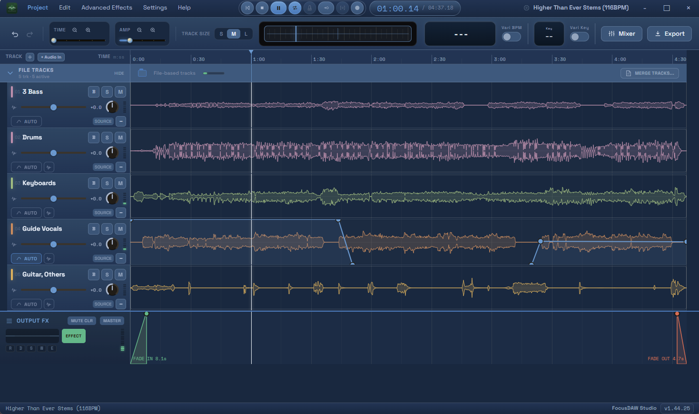
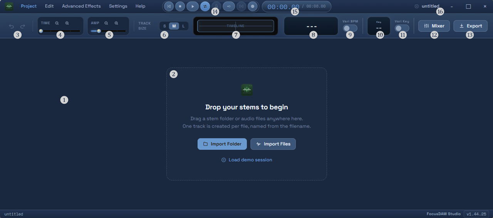
| ① 타임라인(Arrange) | 트랙과 파형, 클립, 오토메이션이 놓이는 주 작업 영역입니다. |
|---|---|
| ② 시작 안내 패널 | 트랙이 없을 때만 보입니다. 여기에 파일을 끌어다 놓거나 Import Folder · Import Files · Load demo session으로 시작합니다. |
| ③ Undo / Redo | 실행 취소와 다시 실행입니다(Ctrl+Z / Ctrl+Y). |
| ④ TIME 줌 | 타임라인의 가로(시간축) 확대·축소입니다. |
| ⑤ AMP 줌 | 파형의 표시 높이(보기 배율)입니다. 실제 볼륨은 바뀌지 않습니다. |
| ⑥ TRACK SIZE | 트랙 행 높이를 S · M · L 중에서 고릅니다. 크기에 따라 헤더에 보이는 컨트롤 수가 달라집니다. |
| ⑦ 타임라인 미니맵 | 곡 전체에서 현재 보고 있는 구간을 보여 줍니다. 클릭·드래그로 빠르게 이동합니다. |
| ⑧ BPM 표시기 | 앞은 프로젝트 BPM, 뒤는 재생 BPM입니다. 클릭하면 BPM 설정 패널이 열립니다(6장). |
| ⑨ Vari BPM 스위치 | 켜야 재생 BPM으로 실제 재생 속도가 바뀝니다(기본 꺼짐). |
| ⑩ Key 표시기 | 감지·지정된 원곡 키와 이조된 재생 키를 표시합니다. 클릭하면 Key 패널이 열립니다(7장). |
| ⑪ Vari Key 스위치 | 켜야 지정한 반음 오프셋이 실시간 재생에 적용됩니다(기본 꺼짐). |
| ⑫ Mixer | 별도 창의 믹서 콘솔을 엽니다(F3). |
| ⑬ Export | 믹스다운 내보내기 창을 엽니다(11장). |
| ⑭ 트랜스포트 | 처음으로 · 정지 · 재생/일시정지 · Repeat · 메트로놈 · 프리롤 · Punch · Record 버튼입니다(4장 · 5장). |
| ⑮ 시간 표시 | 현재 재생 위치와 프로젝트 전체 길이입니다. |
| ⑯ 프로젝트 이름 | 클릭하면 그 자리에서 이름을 고칠 수 있습니다. 창 아래 상태 표시줄에도 같은 이름이 나옵니다. |
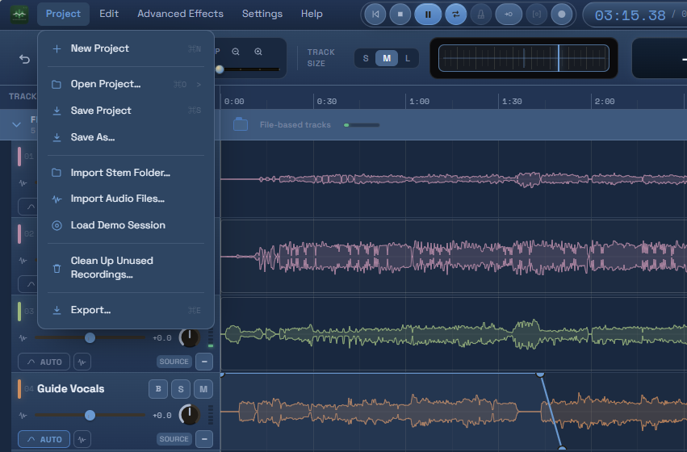
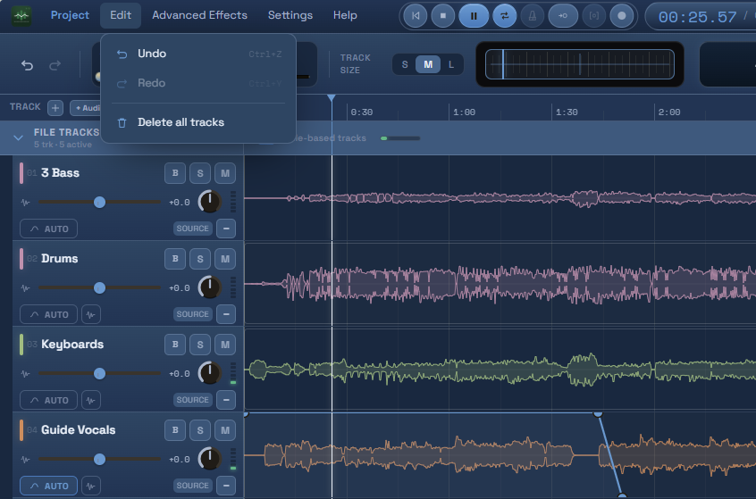
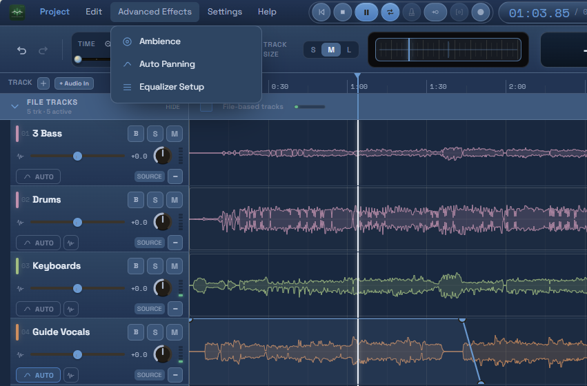
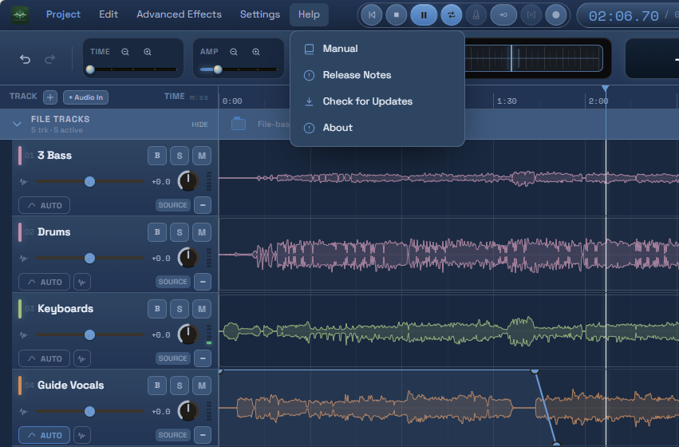
Settings 메뉴는 색상 테마, 믹서 창 초기화, 오디오 장치 설정을 담고 있습니다(12장).
상단의 TRACK SIZE로 트랙 행 높이를 바꿉니다. 높이가 커질수록 헤더에 더 많은 컨트롤이 펼쳐지므로, 오토메이션 Curve나 Audio In 트랙의 녹음 컨트롤을 다룰 때는 M 또는 L을 쓰는 것이 편합니다.
| S (작게) | 이름·B·S·M 정도만 보입니다. 트랙 수가 많을 때 전체를 한눈에 훑기 좋습니다. |
|---|---|
| M (기본) | 볼륨·팬·AUTO·SOURCE까지 보입니다. 일반적인 믹스 작업에 적당합니다. |
| L (크게) | 오토메이션의 Reset · Curve와 Audio In 트랙의 입력 포트·MON·LIM·입력 게인까지 모두 보입니다. |
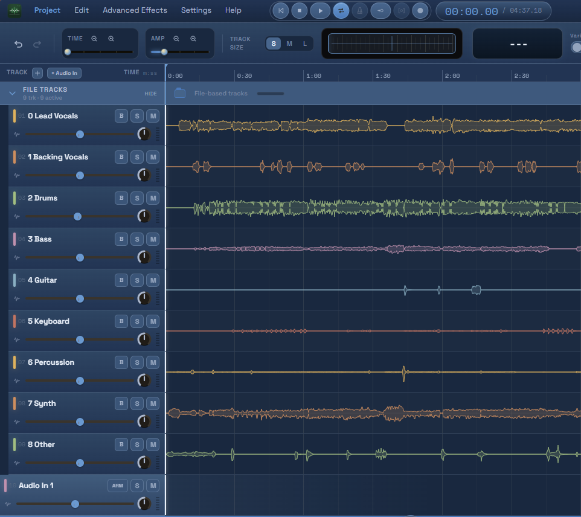
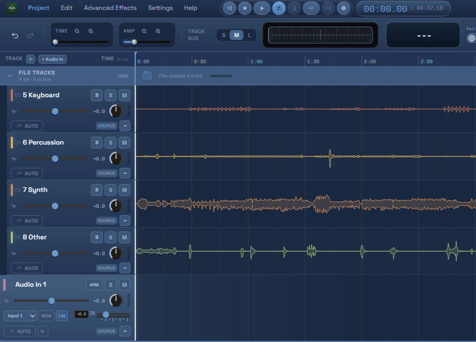
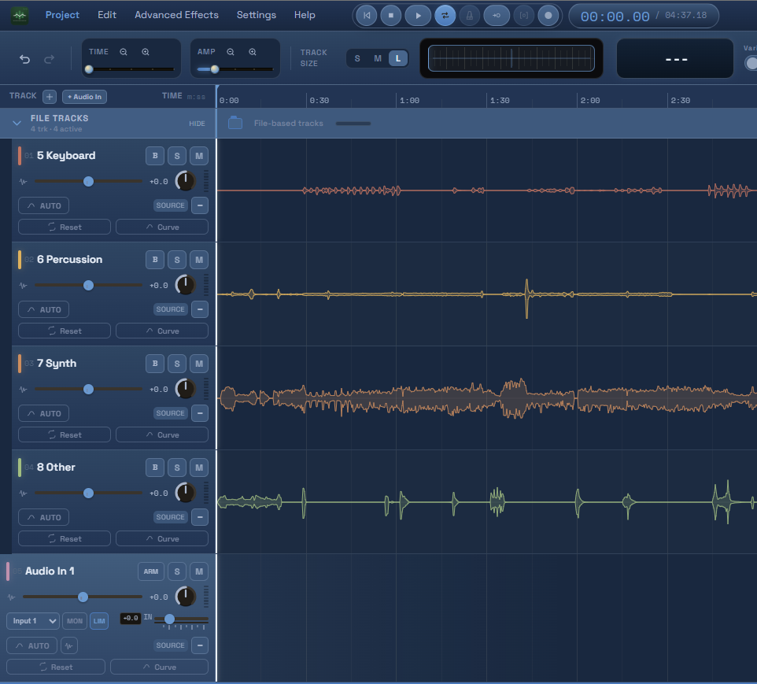
불러온 스템은 FILE TRACKS 그룹으로 묶입니다. 그룹 머리글의 HIDE / SHOW를 누르면 파일 트랙 전체가 한 줄로 접히고, 그 줄에는 합쳐진 요약 파형과 “n file tracks hidden” 표시가 나타납니다. 녹음 중인 Audio In 트랙에만 집중하고 싶을 때 유용합니다.
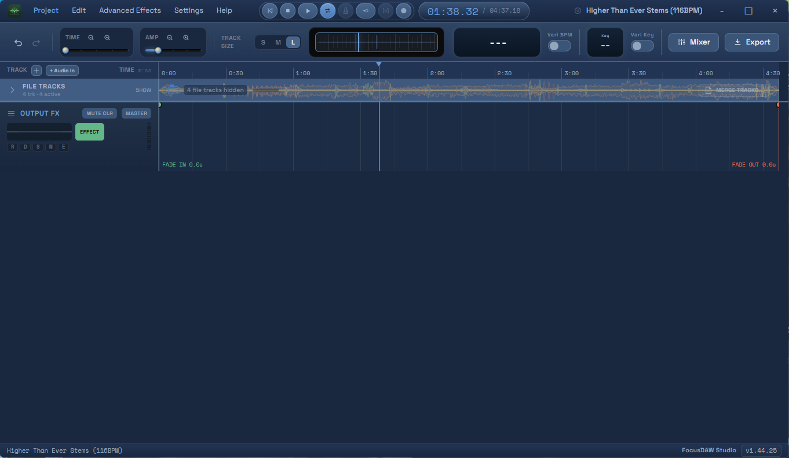
.mp3, .wav, .aif, .aiff, .m4a, .ogg, .flac.focus.wav.mp3, .wavFocusDAW Studio is a desktop app for mixing a set of separated stems and overdubbing your own vocals on top of them. Balance each track's volume, pan, solo, mute, reverb, and echo; record a live mic input straight onto an Audio In track; then shape the master with a 9-band graphic EQ and output effects and export an MP3 or WAV mixdown.
| ① Timeline (Arrange) | The main work area holding tracks, waveforms, clips, and automation. |
|---|---|
| ② Start panel | Shown only while the session is empty. Drop files here, or use Import Folder · Import Files · Load demo session. |
| ③ Undo / Redo | Undo and redo (Ctrl+Z / Ctrl+Y). |
| ④ TIME zoom | Horizontal (time-axis) zoom of the timeline. |
| ⑤ AMP zoom | Waveform display height. A visual scale only — it does not change the audio level. |
| ⑥ TRACK SIZE | Track row height: S · M · L. Taller rows reveal more header controls. |
| ⑦ Timeline minimap | Shows which part of the song is in view; click or drag to jump. |
| ⑧ BPM indicator | Project BPM in front, playback BPM behind. Click to open the BPM panel (ch. 6). |
| ⑨ Vari BPM switch | Must be on for the playback BPM to actually change the speed (off by default). |
| ⑩ Key indicator | The detected/assigned original key and the transposed playback key. Click to open the Key panel (ch. 7). |
| ⑪ Vari Key switch | Must be on for the semitone offset to apply during playback (off by default). |
| ⑫ Mixer | Opens the mixer console in its own window (F3). |
| ⑬ Export | Opens the mixdown export dialog (ch. 11). |
| ⑭ Transport | Return to start · Stop · Play/Pause · Repeat · Metronome · Pre-roll · Punch · Record (ch. 4 & 5). |
| ⑮ Time display | Current playhead position and total project length. |
| ⑯ Project name | Click to rename in place. The same name appears in the status bar at the bottom. |
The Settings menu holds color themes, the mixer-window reset, and audio device setup (ch. 12).
TRACK SIZE at the top changes the row height. Taller rows expose more header controls, so use M or L when working with automation curves or the Audio In recording controls.
| S (small) | Roughly name, B, S, and M only — best for scanning many tracks at once. |
|---|---|
| M (default) | Adds volume, pan, AUTO, and the SOURCE chip. Suits everyday mixing. |
| L (large) | Also shows automation Reset · Curve and, on Audio In tracks, the input port, MON, LIM, and input gain. |
Imported stems are grouped under FILE TRACKS. The HIDE / SHOW button on the group header folds every file track into a single row that still shows a combined summary waveform plus an “n file tracks hidden” chip — handy when you want to focus on the Audio In track you are recording.
.mp3, .wav, .aif, .aiff, .m4a, .ogg, .flac.focus.wav.mp3, .wav받으신 설치 파일(FocusDAW-Studio-Setup-x.y.z.exe)을 실행하면 설치가 진행되고, 바탕화면과 시작 메뉴에 FocusDAW Studio 아이콘이 만들어집니다. 이후에는 이 아이콘으로 앱을 실행합니다.
앱을 켜면 마지막에 작업하던 세션이 자동으로 복원됩니다. 저장하지 않고 종료했더라도 이어서 작업할 수 있습니다(아래 RECENT PROJECT 참고). 완전히 새로 시작하려면 Project ▸ New Project를 사용하세요.
| New Project | 현재 세션을 완전히 비우고 새 프로젝트를 시작합니다(트랙과 마스터 이펙트가 모두 초기화됩니다). |
|---|---|
| Open Project… | 저장된 .focus 프로젝트 파일을 엽니다. 항목 위에 마우스를 올리면 최근 목록이 옆으로 펼쳐집니다(아래 참고). |
| Save Project | 현재 상태를 .focus 파일로 저장합니다. 트랙 설정, 마스터 설정, 오토메이션, 클립·테이크 정보가 함께 저장됩니다. 아직 저장한 적이 없으면 저장 위치를 묻습니다. |
| Save As… | 새 위치·새 이름으로 저장합니다. 이때 프로젝트가 소유한 오디오를 함께 모아 갑니다(아래 “프로젝트 통째로 옮기기” 참고). |
| Import Stem Folder… | 선택한 폴더 루트의 오디오 파일을 한 번에 트랙으로 등록합니다. |
| Import Audio Files… | 개별 오디오 파일을 여러 개 골라 트랙으로 추가합니다. |
| Load Demo Session | 앱에 내장된 데모 스템을 불러와 기능을 시험해 봅니다. |
| Clean Up Unused Recordings… | 저장된 프로젝트의 오디오 폴더에서 어떤 트랙도, 되돌리기 기록도 참조하지 않는 녹음·바운스 파일을 찾아 휴지통으로 보냅니다(아래 참고). |
| Export… | 믹스다운 내보내기 창을 엽니다(MP3 / WAV). |
Open Project… 위에 마우스를 올리면 최근 목록이 옆으로 펼쳐집니다. 목록은 두 부분으로 나뉩니다.
| RECENT PROJECT | 앱을 마지막으로 닫았을 때의 자동 저장 상태입니다. 저장하지 않고 종료했더라도 작업하던 세션을 그대로 이어서 열 수 있습니다. |
|---|---|
| RECENT SAVED | 최근에 저장한 .focus 프로젝트들입니다. 이름 아래에 실제 파일 경로가 함께 표시되어 같은 이름의 다른 프로젝트를 구분할 수 있습니다. |
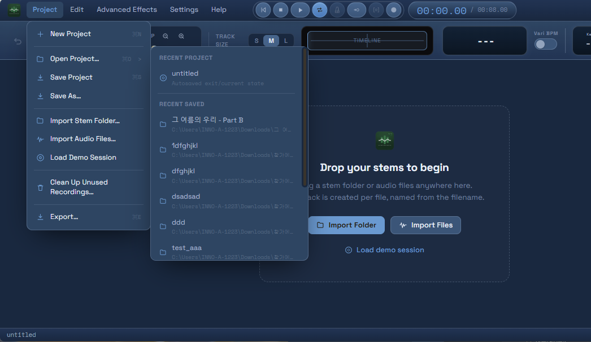
상단 오른쪽의 프로젝트 이름을 클릭하면 그 자리에서 이름을 고칠 수 있습니다(Enter 확정, Esc 취소). 여기서 정한 이름은 창 제목과 아래 상태 표시줄에 나타나고, 저장할 때 파일 이름의 기본값으로도 쓰입니다.
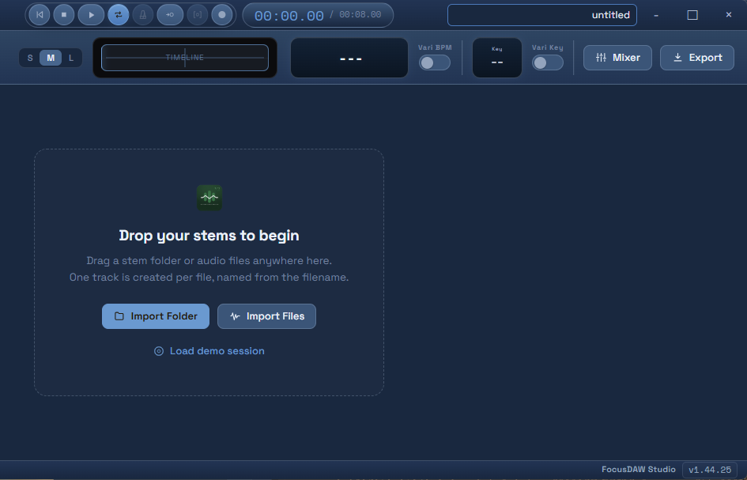
Save As…로 저장하면 이 프로젝트가 만들어 낸 오디오(녹음 테이크, 바운스, 병합 파일)를 .focus 파일 옆의 “<프로젝트 이름> Audio” 폴더로 모아 두고, 프로젝트 안에는 상대 경로로 기록합니다. 덕분에 .focus와 그 Audio 폴더를 함께 복사하면 다른 폴더나 다른 PC에서도 그대로 열립니다.
여러 번 다시 녹음하다 보면 어느 트랙도 쓰지 않는 .wav 파일이 프로젝트 폴더에 쌓입니다. Project ▸ Clean Up Unused Recordings…는 저장된 프로젝트의 Audio 폴더를 훑어 지금 트랙에서도 쓰이지 않고 되돌리기(Undo) 기록에도 남아 있지 않은 파일만 골라내고, 파일 이름·종류·크기 목록과 총 용량을 보여 준 뒤 휴지통으로 이동합니다.
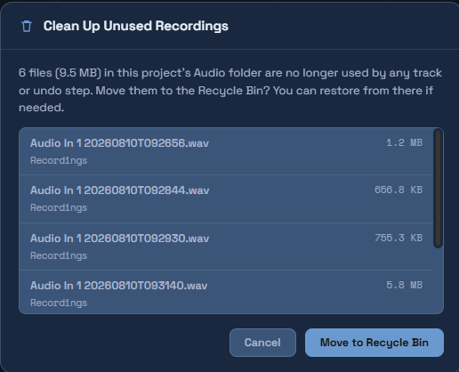
Run the installer you received (FocusDAW-Studio-Setup-x.y.z.exe). It adds a FocusDAW Studio shortcut to the desktop and the Start menu — launch the app from there.
On start-up the app restores the session you last worked on, even if you closed it without saving (see RECENT PROJECT below). Use Project ▸ New Project when you want a clean slate instead.
| New Project | Clears the session completely and starts fresh (both tracks and master effects are reset). |
|---|---|
| Open Project… | Opens an existing .focus file. Hovering the item slides out a recent list (see below). |
| Save Project | Saves the current state to a .focus file — track parameters, master effects, automation, and clip/take information. If the project has never been saved, you are asked where to put it. |
| Save As… | Saves to a new name/location and gathers the audio this project owns alongside it (see "Moving a whole project" below). |
| Import Stem Folder… | Creates a track for every audio file in the root of the chosen folder. |
| Import Audio Files… | Adds multiple individual audio files as tracks. |
| Load Demo Session | Loads the demo stems bundled with the app so you can try the features. |
| Clean Up Unused Recordings… | Scans the saved project's audio folder for recordings and bounces that no track and no undo step references, and moves them to the Recycle Bin (see below). |
| Export… | Opens the mixdown export dialog (MP3 / WAV). |
Hovering Open Project… slides out a recent list in two parts.
| RECENT PROJECT | The autosaved state from when you last closed the app — you can pick the session back up even if you never saved it. |
|---|---|
| RECENT SAVED | Recently saved .focus projects. Each entry shows its full path beneath the name so identically-named projects stay distinguishable. |
Click the project name at the top right to rename it in place (Enter confirms, Esc cancels). The name shows in the window title and the status bar, and becomes the default filename when saving.
Save As… collects the audio this project produced (recorded takes, bounces, consolidated files) into a “<Project> Audio” folder next to the .focus and stores relative paths to them. Copy the .focus together with that Audio folder and the project opens correctly on another folder or another PC.
Re-recording repeatedly leaves .wav files in the project folder that no track uses any more. Project ▸ Clean Up Unused Recordings… scans the saved project's Audio folder for files that are neither used by a track nor held by the undo history, lists them with name, category, and size plus the total, and moves them to the Recycle Bin.
오디오를 가져오는 방법은 세 가지입니다.
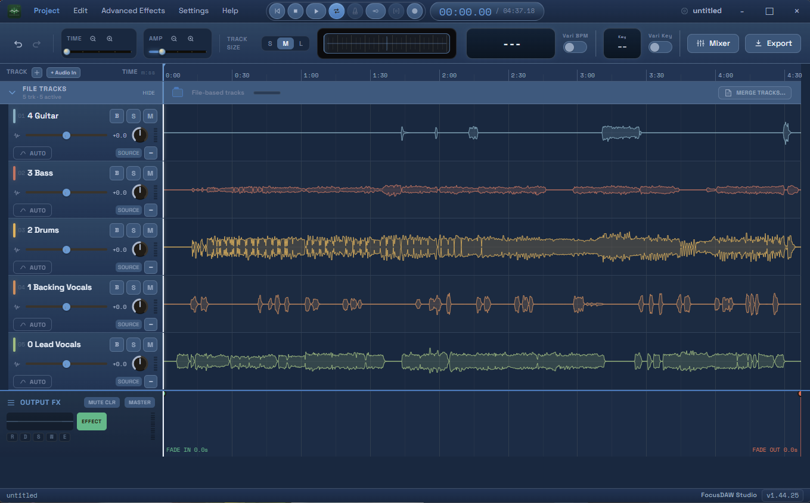
여러 스템을 가져오면 보컬, 드럼, 베이스, 기타, 스트링, 신스처럼 파일별로 독립 트랙이 생성됩니다. 각 트랙은 같은 시작점에 놓이지만, 실제 오디오가 없는 구간은 빈 파형으로 보이므로 편곡의 구간별 밀도를 한눈에 확인할 수 있습니다.
아직 트랙이 없는 초기(빈) 화면에서 Import Folder로 스템 폴더를 불러오면, 그 폴더 이름이 프로젝트 이름으로 자동 설정됩니다. 스템을 폴더 단위로 정리해 둔 경우 이름을 따로 입력하지 않아도 곡 제목이 곧바로 잡혀 편리합니다.
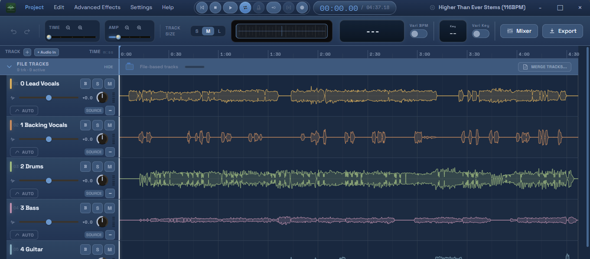
Higher Than Ever Stems).메인 타임라인 영역으로 오디오 파일을 끌어다 놓아도 트랙을 추가할 수 있습니다. 지원하지 않는 확장자는 자동으로 무시됩니다.
.focus 프로젝트는 오디오 설정과 파일 경로를 저장합니다. 원본 오디오 파일이 옮겨지거나 지워지면 트랙 헤더에 붉은 NO SRC 표시가 나타납니다. 이때는 같은 파일을 그 트랙 위로 끌어다 놓거나 같은 이름의 오디오를 다시 가져오면 누락된 트랙이 재연결됩니다.
There are three ways to import audio files into your session:
Importing multiple stems creates separate, independent tracks for Vocals, Drums, Bass, Guitar, and so on. Tracks are aligned to the same starting point. Sections where a track is silent are shown as flat line waveforms, providing a clear layout of the arrangement density.
When you use Import Folder on the initial (empty) screen — before any track exists — the folder's name automatically becomes the project name. If you keep your stems in per-song folders, the title is set instantly without typing.
Higher Than Ever Stems.You can drag and drop audio files directly from your system file explorer onto the main timeline area to add new tracks. Unsupported formats are ignored automatically.
The .focus file references audio file paths. If the original audio is moved or deleted, the track header shows a red NO SRC chip. Drop the same file onto that track, or re-import audio with matching names, to reconnect it.
FocusDAW Studio는 마이크·오디오 인터페이스로 들어오는 입력 신호를 Audio In 트랙에 실시간으로 녹음할 수 있습니다. 녹음 결과는 프로젝트 폴더에 .wav 파일(테이크)로 저장되고, 다른 스템 트랙과 똑같이 볼륨·팬·솔로·뮤트·오토메이션·마스터 이펙트를 적용할 수 있습니다. 기존 스템 위에 보컬이나 애드리브를 덧입히는 오버더빙이 이 앱의 핵심 작업입니다.
이 장은 녹음 → 여러 테이크 중 고르기 → 클립 다듬기 → 보컬 이펙트 걸기까지의 흐름을 순서대로 다룹니다.
타임라인 왼쪽 위 TRACK 영역에 추가 버튼이 두 개 있습니다. +(플러스)는 오디오 파일을 불러오는 일반 파일 트랙을, + Audio In 버튼은 입력 녹음용 트랙을 만듭니다. Audio In 트랙은 파일 트랙과 구분되도록 헤더에 파란 틴트가 적용되며, 파일 트랙 그룹(FILE TRACKS) 바깥에 놓입니다.
Audio In 트랙 헤더에는 일반 트랙의 볼륨·팬·솔로·뮤트에 더해, 녹음을 위한 전용 컨트롤이 있습니다. (트랙 크기가 S일 때는 공간이 좁아 ARM만 제목 행에 인라인으로 표시되고, M/L에서 모든 컨트롤이 펼쳐집니다.)
| ARM | 이 트랙을 녹음 대기(무장) 상태로 만듭니다. 녹음은 ARM된 트랙에만 기록되며, 한 번에 하나의 Audio In 트랙만 ARM됩니다(다른 트랙을 ARM하면 이전 트랙은 자동 해제). ARM된 트랙이 있어야 상단의 Record 버튼이 활성화됩니다. |
|---|---|
| 입력 포트 선택 | 이 트랙이 받을 입력 채널을 고릅니다. 현재 열린 인터페이스의 실제 채널 수에 맞춰 모노 포트(Input 1, Input 2 …)와 연속 스테레오 쌍(Input 1-2 …)이 동적으로 나열됩니다. (ASIO는 인터페이스가 제공하는 실제 채널 이름을 그대로 표시합니다.) |
| MON | 입력 모니터링. 켜면 입력 신호를 출력으로 흘려보내 지금 들어오는 소리를 실시간으로 들을 수 있습니다. 모노 입력은 양쪽 채널로 센터링되어 재생됩니다. |
| LIM | 입력 리미터(천장 −1.0 dBFS). 켜져 있으면 과입력으로 인한 클리핑을 방지합니다. 기본값은 켜짐입니다. 리미터가 실제로 신호를 누른 양은 입력 게인 슬라이더의 게인 리덕션(GR) 미터(레벨 미터 아래의 붉은 막대, 오른쪽에서 채워짐)로 확인합니다. GR이 크게 자주 움직이면 입력 게인이 너무 큰 것이므로 낮춰 주세요. |
| 입력 게인 | 녹음될 입력 신호의 게인을 조절합니다. 헤더에 현재 게인이 dB로 표시됩니다. 너무 크면 왜곡, 너무 작으면 잡음이 커지므로 미터가 상단에 닿지 않는 선에서 맞춥니다. |
| 볼륨 · 팬 | 파일 트랙과 동일하게 재생 레벨과 스테레오 위치를 조절합니다(볼륨은 −∞ ~ +6 dB). |
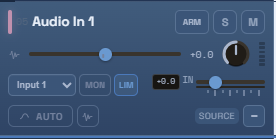
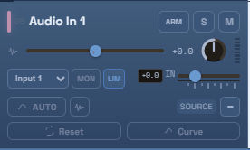
헤더 아래쪽 줄에는 오토메이션 AUTO 버튼 옆에 파형 모양의 FX 버튼이 있습니다. 이 버튼이 보컬 채널 스트립 창을 여는 입구입니다(⑨ 참고). 오른쪽 SOURCE 칩은 이 트랙의 원본 오디오가 정상적으로 연결돼 있음을 뜻하며, 파일을 찾지 못하면 붉은 NO SRC로 바뀝니다.
녹음할 트랙의 ARM 버튼을 눌러 녹음 대기(무장) 상태로 만듭니다. ARM된 트랙이 있어야 트랜스포트의 Record 버튼이 활성화되고, 녹음은 오직 그 트랙에만 기록됩니다.
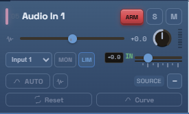
ARM한 뒤 트랜스포트의 Record(빨간 점) 버튼을 누르면 녹음이 시작됩니다. 실수를 막기 위해 녹음 트랜스포트는 다음 규칙을 따릅니다.
| 정지 상태에서 Record — 프리롤(기본) | 프리롤이 켜져 있고 앞에 들을 음악이 있으면, 재생 위치보다 설정한 초만큼 앞에서 기존 음악이 먼저 재생되고 원래 위치에 도달하면 녹음이 시작됩니다. 화면 상단에 PRE-ROLL 표시와 남은 시간이 뜨며, 타임라인은 가려지지 않습니다. |
|---|---|
| 정지 상태에서 Record — 카운트인 | 프리롤이 꺼져 있거나, 들을 음악이 없을 때(빈 프로젝트 / 맨 앞에서 녹음)는 화면 중앙에 카운트인 오버레이가 뜬 뒤 재생과 녹음이 동시에 시작됩니다. 메트로놈이 켜져 있으면 4 → 3 → 2 → 1(프로젝트 BPM 기준 한 마디), 꺼져 있으면 3 → 2 → 1(1초 간격 무음)입니다. |
| 재생 중 Record | 카운트인 없이 즉시 녹음이 시작됩니다. |
| 프리롤 길이 | 트랜스포트의 프리롤 버튼을 누를 때마다 2초 → 4초 → 8초 → 끔 으로 바뀝니다(버튼에 현재 초가 표시됨, 기본 4초). 느린 곡은 길게, 빠른 곡은 짧게 두면 편합니다. |
| 왜 프리롤인가 | 이 앱은 불러온 스템 위에 덧녹음하는 도구입니다. 그런 음악은 중간에 템포가 미묘하게 흔들리고, BPM이 맞아도 클릭이 곡의 박자 위상까지 알 수는 없어서 합성 클릭은 음악과 어긋나기 쉽습니다. 프리롤의 리드인은 곡 자체이므로 정의상 박자가 맞습니다. 길이를 마디가 아니라 초로 정하는 것도 같은 이유입니다. |
| 메트로놈(카운트인 클릭) | 트랜스포트의 메트로놈 버튼으로 켜고 끕니다. 카운트인으로 시작할 때만 쓰입니다(프리롤에는 클릭이 없습니다 — 위 "왜 프리롤인가" 참고). 켜면 프로젝트 BPM에 맞춘 4박 클릭이 울립니다(첫 박은 높은 음으로 강조). 클릭은 모니터 출력 전용이라 녹음 파일과 Export에는 들어가지 않으며, 녹음이 시작되면 멈춥니다. 프로젝트 BPM이 없으면 버튼이 비활성됩니다. |
| Repeat 자동 해제 | Record를 누르면 반복(Loop)이 자동으로 꺼집니다. 녹음이 끝나면 이전 반복 상태로 복원됩니다. |
| 자동 종료 | 재생이 기존 트랙 중 가장 긴 트랙의 끝에 도달하면 녹음과 재생이 자동으로 멈춥니다. 기존 트랙이 없으면 직접 Stop을 누를 때까지 계속 녹음합니다. |
| 녹음 중 Record / Stop | 녹음과 재생을 모두 정지합니다. 트랜스포트는 0초로 복귀합니다. |
| 녹음 중 Play/Pause · 처음으로 이동 | 녹음 중에는 무시됩니다. 녹음을 멈추려면 Record 또는 Stop을 사용하세요. |
| 프리롤 · 카운트인 도중 조작 | 진행 중에 Record / Stop / Play를 누르면 취소됩니다(메트로놈 클릭도 즉시 멈춤). 프리롤을 취소하면 재생이 멈추고 플레이헤드가 Record를 누른 위치로 되돌아갑니다. |
| 프리롤이 안 되는 경우 | ① Repeat 구간이 켜져 있으면 프리롤 대신 카운트인이 쓰입니다(구간 반복은 플레이헤드를 구간 안에 가두므로 앞으로 되감을 수 없습니다). ② 재생 위치가 곡 맨 앞이거나 다른 트랙에 음악이 없으면 들려줄 리드인이 없으므로 카운트인으로 넘어갑니다. |
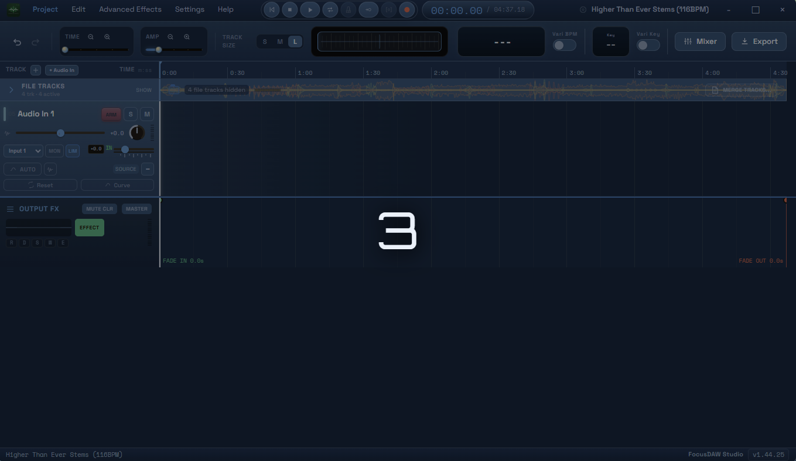
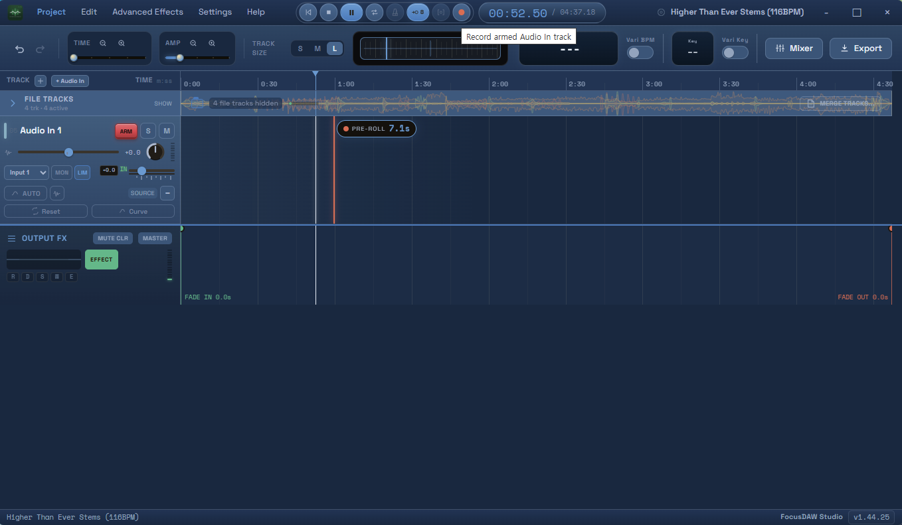
같은 구절을 여러 번 불러 그중 제일 좋은 것을 고르고 싶을 때 씁니다. 타임라인 아래 OUTPUT FX 눈금 레인을 드래그해 Repeat 구간을 만들고 Repeat를 켠 뒤 Record를 누르면, 구간을 한 바퀴 돌 때마다 테이크가 하나씩 쌓입니다. 녹음 중에는 REC Take A · B · C … 배지가 현재 몇 번째 테이크인지 알려 줍니다.
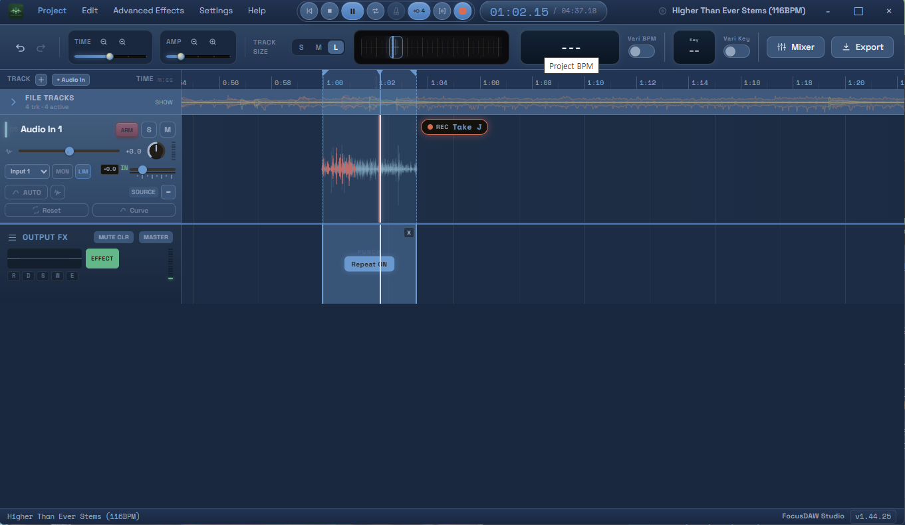
테이크가 둘 이상 쌓이면 클립 왼쪽 위에 “▾ n takes” 배지가 생깁니다. 이 배지를 누르면 아래로 테이크 레인이 펼쳐져 Take A, B, C … 를 나란히 볼 수 있습니다.
테이크는 클립(녹음한 구간)별로 따로 관리됩니다. 한 트랙에서 서로 다른 구간을 여러 번 녹음했다면, 레인 목록도 CLIP 1 · CLIP 2 · CLIP 3 … 머리글로 나뉘어 표시되고 각 클립의 테이크는 그 클립 안에서 Take A부터 번호가 매겨집니다. 배지도 “3 clips · 8 takes”처럼 알려 줍니다. 클립마다 테이크 개수가 달라도 서로 영향을 주지 않으며, 선택한 테이크가 맨 위 메인 타임라인에 표시되고 재생·내보내기에 쓰입니다.
| 테이크 고르기 | 레인을 클릭하면 그 클립이 해당 테이크로 재생됩니다. 다른 클립의 선택은 그대로 유지됩니다(예: 1번 클립은 Take A, 2번 클립은 Take C, 3번 클립은 Take B). |
|---|---|
| 컴프 만들기 (swipe) | 레인 위를 가로로 쓸면(swipe) 한 클립 안에서도 구간마다 다른 테이크를 골라 이어 붙일 수 있습니다. “앞부분은 Take B, 뒷부분은 Take D”처럼 좋은 부분만 조합하는 방식입니다. 쓸기는 그 테이크가 속한 클립 구간 안으로만 적용됩니다. |
| Clear | 쓸어서 나눈 구간을 지우고 각 클립이 다시 테이크 하나를 통째로 재생하게 되돌립니다. 클립별 테이크 선택은 그대로 남습니다. |
| 테이크 삭제 | 각 레인 오른쪽의 × 버튼으로 그 테이크를 지웁니다. |
| Flatten Comp | 조합한 결과를 하나의 오디오 파일로 확정합니다. 클립마다 선택한 테이크가 각각 확정되고 나머지 테이크는 정리됩니다. 모든 테이크의 파형이 완전히 로드된 뒤에 실행하세요. |
| 레인 접기 | 배지를 다시 누르거나 아래쪽 ∨ 버튼으로 레인을 접습니다. |
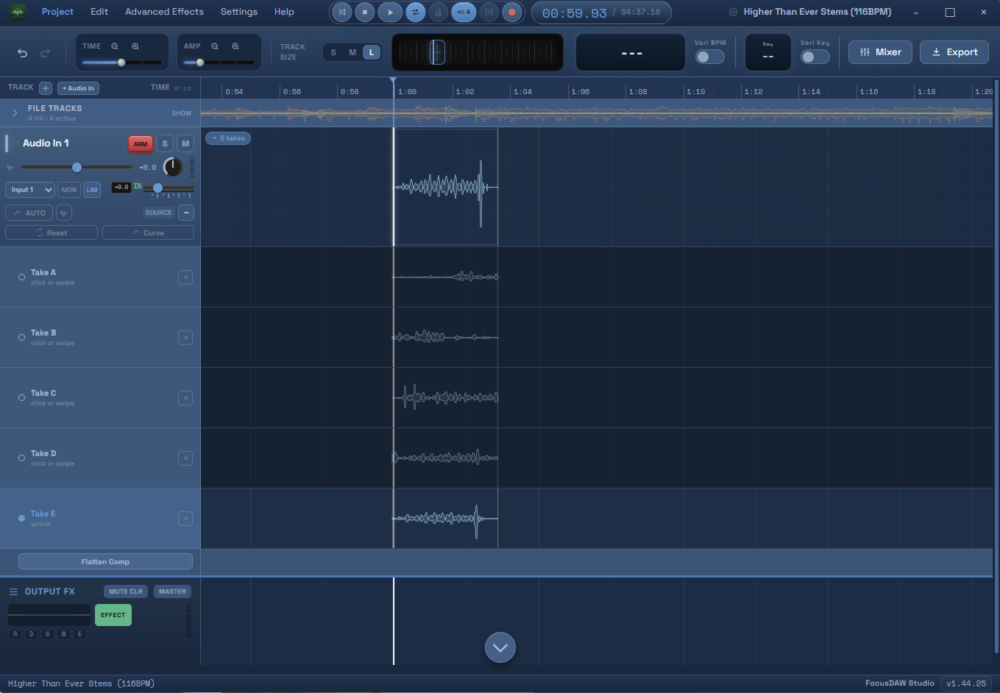
한 소절만 틀렸을 때 전체를 다시 부르지 않고 그 구간만 덮어쓰는 방식입니다. 먼저 Repeat 구간을 만든 다음 트랜스포트의 Punch 버튼을 켜고 Record를 누르면, 프리롤로 들어가 구간 시작점에서 자동으로 녹음이 시작(punch-in)되고 끝점에서 자동으로 멈춥니다(punch-out). 구간 바깥의 소리는 건드리지 않습니다.
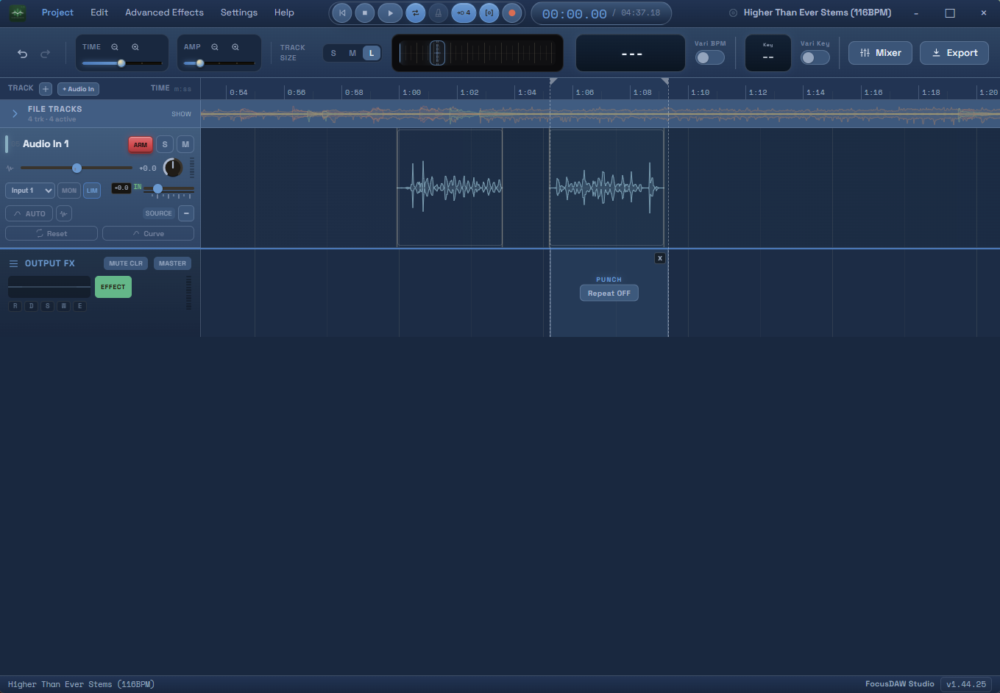
| Punch 켜기 조건 | Repeat 구간이 있어야 버튼이 활성화됩니다. 구간을 지우면 Punch도 자동으로 꺼집니다(구간 없는 상태에서 전체가 덮어써지는 사고를 막기 위함). |
|---|---|
| Punch 켜짐 + Repeat 꺼짐 | 단일 펀치 — 구간을 한 번만 다시 녹음해 현재 테이크의 그 부분을 교체합니다. |
| Punch 켜짐 + Repeat 켜짐 | Loop-Punch Comp — 구간을 반복하며 매 회차를 구간 전용 테이크로 쌓습니다. 그중 좋은 것을 테이크 레인에서 고르면 됩니다. |
| 원본 보존 | 펀치 전의 소리는 버려지지 않고 테이크로 남습니다. 마음에 들지 않으면 이전 테이크로 되돌릴 수 있습니다. |
녹음된 오디오는 클립 단위로 다룰 수 있습니다(Audio In 트랙과 병합으로 만든 Bounce 트랙에서 사용 가능). 클립을 클릭하면 테두리가 밝아지며 선택되고, 시작·끝 시각이 표시됩니다.
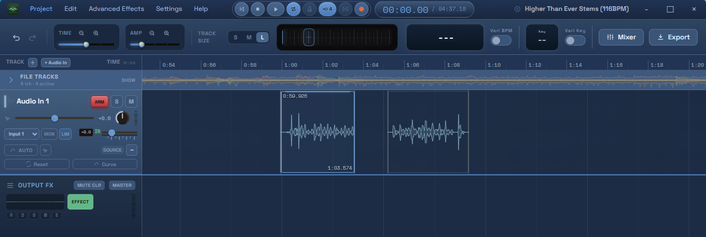
클립 위에서 마우스 오른쪽 버튼을 누르면 편집 메뉴가 열립니다.
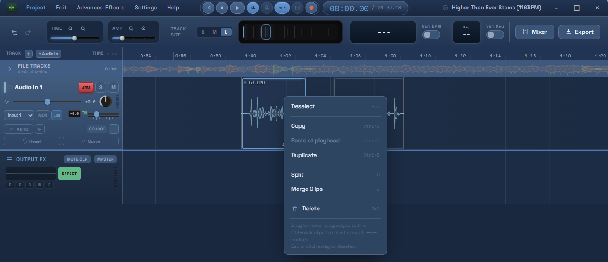
| Deselect Esc | 선택을 해제합니다. |
|---|---|
| Copy Ctrl+C | 선택한 클립을 복사합니다. |
| Paste at playhead Ctrl+V | 복사한 클립을 현재 재생 위치에 붙여 넣습니다. |
| Duplicate Ctrl+D | 클립을 바로 뒤에 복제합니다. |
| Split C | 재생 위치를 기준으로 클립을 둘로 나눕니다. |
| Merge Clips J | 이어진 클립들을 하나로 합칩니다. |
| Delete Del | 클립을 지웁니다. |
| 이동 | 클립 가운데를 드래그해 시간축으로 옮깁니다. |
|---|---|
| 트림(길이 조절) | 클립의 좌우 가장자리를 드래그해 앞뒤를 잘라 냅니다. |
| 여러 개 선택 | Ctrl+클릭으로 여러 클립을 함께 선택합니다. |
| 미세 이동(nudge) | 클립을 선택한 채 ←/→로 밀어 줍니다. 기본 1 ms, Ctrl과 함께 10 ms, Shift와 함께 100 ms씩 이동합니다. |
| 선택 해제 | Esc를 누르거나 빈 곳을 클릭합니다. |
Split — 클립 나누기
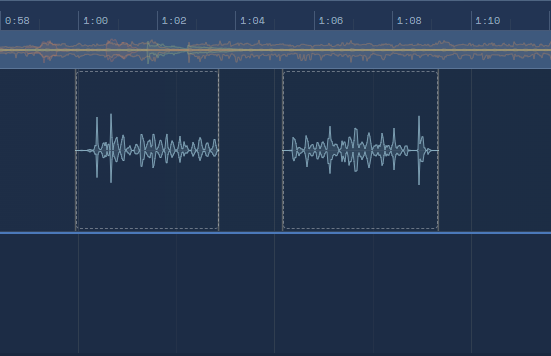
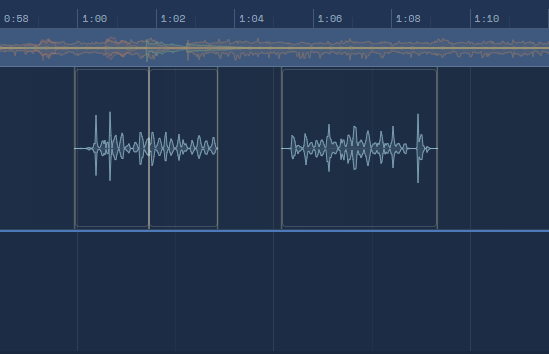
Merge Clips — 클립 합치기
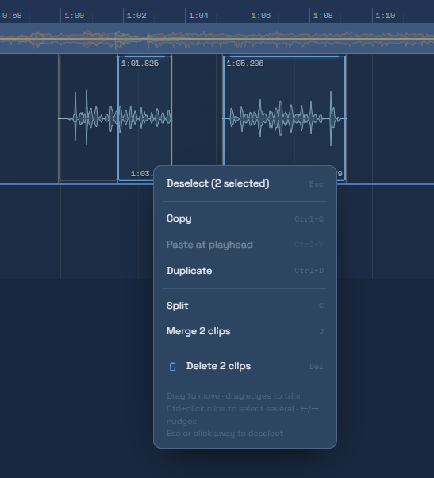
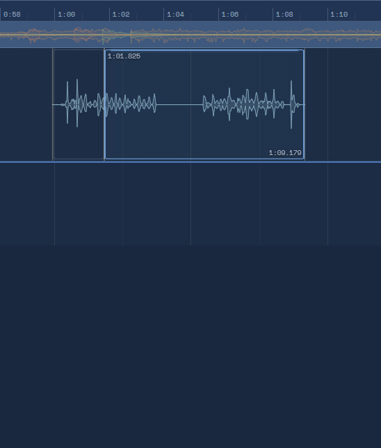
클립별 볼륨 — 클립을 선택하면 위쪽에 가로선이 나타납니다. 이 선을 아래로 끌면 그 클립만 소리가 작아집니다. 맨 위가 0 dB이고 줄이는 방향으로만 동작하며, 드래그하는 동안 dB 값이 표시되고 파형 높이도 함께 줄어듭니다. 한 구절만 너무 크게 불렀을 때 트랙 전체 볼륨을 건드리지 않고 그 부분만 낮출 수 있습니다.
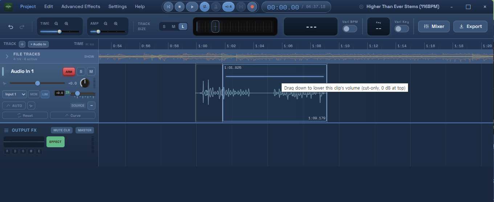
Audio In 트랙과 Bounce 트랙 헤더의 FX 버튼(파형 모양)을 누르면 보컬 채널 스트립 창이 열립니다. 녹음한 목소리를 다듬는 여섯 개의 모듈이 신호가 지나가는 순서대로 세로로 놓여 있고, 이 처리는 트랙 페이더 앞(pre-fader)에서 이루어져 재생·Export·프로젝트 저장에 모두 반영됩니다.
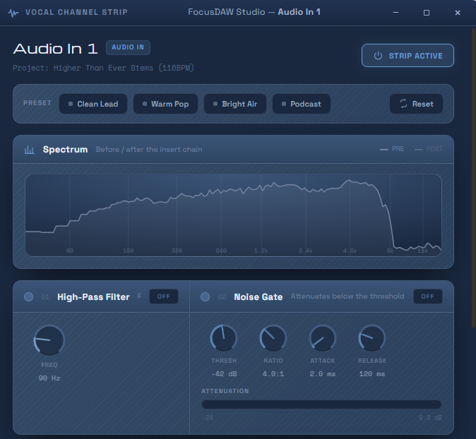
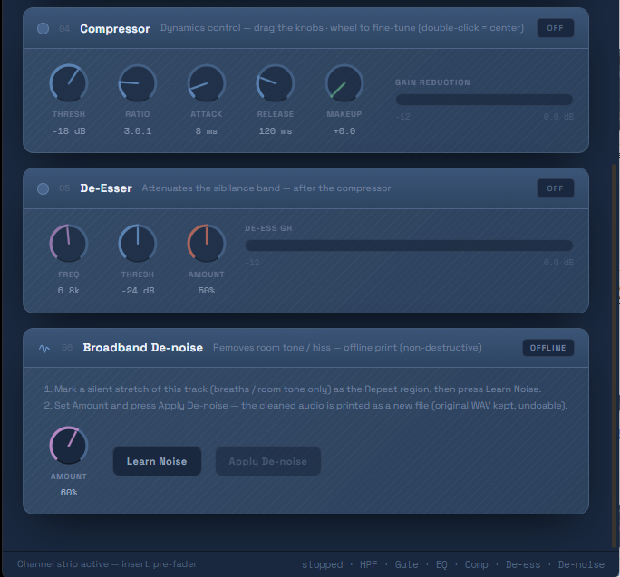
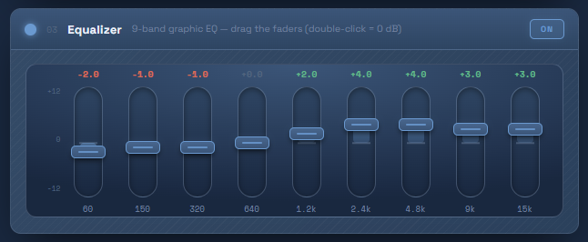
| STRIP ACTIVE (A/B) | 스트립 전체를 켜고 끕니다. 껐다 켜며 처리 전/후를 즉석에서 비교할 때 씁니다. |
|---|---|
| PRESET | Clean Lead · Warm Pop · Bright Air · Podcast 네 가지 보컬 프리셋입니다. HPF · EQ · 컴프레서 · 디에서를 한 번에 잡아 줍니다. |
| Reset | 모든 모듈을 기본값으로 되돌리고 끕니다. A/B(Bypass) 상태는 건드리지 않습니다 — 듣고 있는 방식을 초기화가 말없이 바꾸지 않도록 하기 위함입니다. |
| Spectrum | 처리 전(PRE)과 후(POST)의 주파수 곡선을 겹쳐 보여 줍니다. EQ를 움직이면 POST 곡선이 실시간으로 따라 바뀌어, 목소리가 어떻게 달라지는지 눈으로 확인할 수 있습니다. |
| 01 High-Pass Filter | 저역 럼블·팝 노이즈를 잘라 냅니다(12 dB/oct). FREQ로 자를 지점을 정합니다. |
| 02 Noise Gate | 설정한 임계값(THRESH) 아래 소리를 줄여 숨소리와 방 소음을 정리합니다. RATIO · ATTACK · RELEASE로 반응을 다듬고, ATTENUATION 미터로 지금 얼마나 줄이고 있는지 확인합니다. |
| 03 Equalizer | 9밴드 그래픽 EQ입니다. 세로 페이더를 끌어 대역별로 올리고 내립니다(더블클릭 = 0 dB). |
| 04 Compressor | 큰 소리와 작은 소리의 차이를 좁혀 목소리를 고르게 만듭니다. THRESH · RATIO · ATTACK · RELEASE · MAKEUP을 노브로 조절하며, 노브는 휠로 미세 조정·더블클릭으로 초기화됩니다. GAIN REDUCTION 미터로 압축량을 봅니다. |
| 05 De-Esser | “ㅅ/ㅊ” 같은 치찰음이 셀 때 그 대역만 눌러 줍니다(컴프레서 뒤에 적용). FREQ · THRESH · AMOUNT로 설정하고 DE-ESS GR 미터로 동작량을 확인합니다. |
| 06 Broadband De-noise | 일정하게 깔린 방 소음·히스를 제거합니다(⑩ 참고). 실시간이 아니라 파일로 찍어 내는 오프라인 처리입니다. |
각 모듈 오른쪽의 ON / OFF 버튼으로 개별로 켜고 끌 수 있습니다. 꺼져 있어도 노브를 만지면 자동으로 켜집니다.
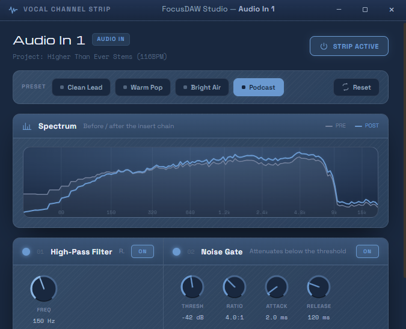
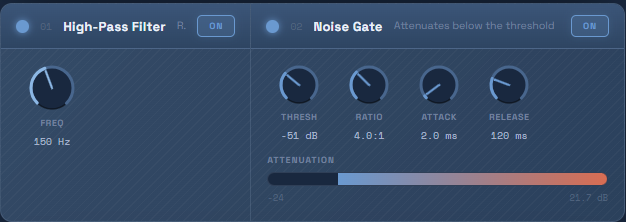
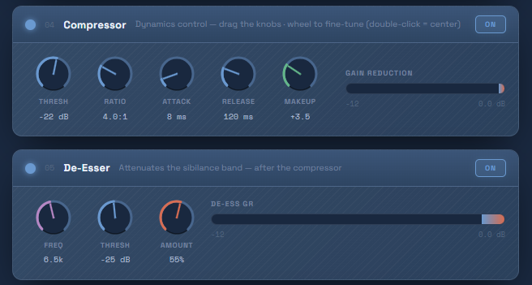
에어컨 소리나 히스처럼 계속 깔려 있는 잡음을 없애는 기능입니다. 먼저 잡음만 있는 구간을 들려주어 “이것이 잡음”이라고 학습시킨 뒤, 그 특성을 곡 전체에서 빼내는 방식입니다.
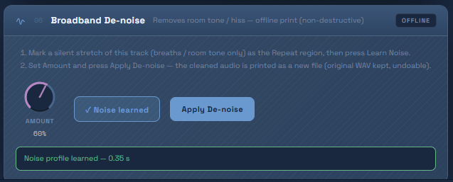
.wav 파일로 저장됩니다. 녹음을 시작한 위치가 곡의 중간이면 그 시점에 클립이 놓입니다.FocusDAW Studio can record a live input signal from a microphone or audio interface straight onto an Audio In track. Each recording is saved into the project folder as a .wav take and behaves exactly like any other stem — volume, pan, solo, mute, automation, and the master effects all apply. Overdubbing vocals or ad-libs on top of imported stems is what this app is built around.
This chapter follows the whole flow in order: record → choose among takes → tidy the clips → shape the voice.
The TRACK area at the top left of the timeline has two add buttons. The + (plus) creates a normal file track for importing audio; the + Audio In button creates an input-recording track. Audio In tracks are tinted blue in the header and sit outside the FILE TRACKS group.
In addition to the usual volume, pan, solo, and mute, an Audio In track header adds dedicated recording controls. (At track size S only ARM is shown inline on the title row for space; M/L reveal every control.)
| ARM | Arms this track for recording. Audio is only captured to the armed track, and only one Audio In track can be armed at a time (arming another disarms the previous one). The transport Record button is only active while a track is armed. |
|---|---|
| Input port | Chooses which input channel this track receives. Ports are built dynamically from the real channel count of the currently open interface: mono ports (Input 1, Input 2 …) and consecutive stereo pairs (Input 1-2 …). (ASIO shows the interface's actual channel names.) |
| MON | Input monitoring. When on, the incoming signal is passed to the output so you can hear it live. A mono input is centered to both output channels. |
| LIM | Input limiter (ceiling −1.0 dBFS). When on, it prevents clipping from a hot input. On by default. How much the limiter is actually clamping is shown by the gain-reduction (GR) meter on the input gain slider (the red bar beneath the level meter, filling from the right). If GR moves a lot and often, the input gain is too high — turn it down. |
| Input gain | Sets the gain of the signal being recorded; the header shows the current gain in dB. Aim for a level where the meter does not hit the top — too hot distorts, too low raises the noise floor. |
| Volume · Pan | Playback level and stereo position, same as a file track (volume ranges −∞ to +6 dB). |
On the lower row, next to the automation AUTO button, sits a waveform-shaped FX button — this is the entry point to the Vocal Channel Strip (see step 9). The SOURCE chip on the right confirms the track's audio is linked; it turns into a red NO SRC chip if the file cannot be found.
Press ARM on the track you want to record. The transport Record button only becomes active while a track is armed, and audio is captured to that track alone.
Once armed, press the transport Record (red dot) button to start recording. To prevent mistakes, the recording transport follows these rules:
| Record from stopped — pre-roll (default) | With pre-roll on and music to roll into, playback starts the set number of seconds before the playhead and recording begins when it reaches the original position. A PRE-ROLL chip and the remaining time appear at the top; the timeline stays visible. |
|---|---|
| Record from stopped — count-in | With pre-roll off, or when there is nothing to roll into (empty project / recording at the very start), a count-in overlay appears and playback and recording start together. With the metronome on it counts 4 → 3 → 2 → 1 (one bar at the project BPM); with it off, 3 → 2 → 1 silently, a second apart. |
| Record while playing | Recording begins immediately, with no count-in. |
| Pre-roll length | Each press of the pre-roll button cycles 2s → 4s → 8s → off (the button shows the current length; default 4s). Longer suits slow songs, shorter suits fast ones. |
| Why pre-roll | This app records over imported stems. That material tends to drift in tempo, and even at a matching BPM a click cannot know the song's beat phase — so a synthesized click easily disagrees with the music. A pre-roll's lead-in is the song, so it is in time by definition. That is also why the length is set in seconds rather than bars. |
| Metronome (count-in click) | Toggled with the metronome button in the transport. Used only when starting with a count-in (pre-roll has no click — see "Why pre-roll"). When on, it plays four clicks on the project's BPM (the downbeat is accented). The click is monitor-only — it is never in the recorded file or an Export — and it stops once recording starts. Without a project BPM the button is disabled. |
| Repeat auto-off | Pressing Record turns Loop off automatically, and restores the previous loop state when recording ends. |
| Auto-stop | When playback reaches the end of the longest existing track, recording and playback stop automatically. With no existing tracks, recording continues until you press Stop. |
| Record / Stop while recording | Stops both recording and playback; the transport returns to 0. |
| Play/Pause · Return-to-start while recording | Ignored during recording. Use Record or Stop to end the take. |
| During pre-roll / the count-in | Pressing Record / Stop / Play cancels it (and silences the click immediately). Cancelling a pre-roll stops playback and returns the playhead to where you pressed Record. |
| When pre-roll does not apply | ① With a Repeat region active, the count-in is used instead — a repeat region keeps the playhead inside itself, so there is nowhere to roll back to. ② At the very start of the song, or with no music on other tracks, there is no lead-in to play, so it falls back to the count-in. |
Use this when you want to sing a phrase several times and keep the best one. Drag a Repeat region on the OUTPUT FX ruler lane, turn Repeat on, and press Record: each pass around the region records a new take. While recording, a REC Take A · B · C … badge shows which take is being captured.
Once more than one take exists, a “▾ n takes” badge appears at the top left of the clip. Click it to expand the take lanes and see Take A, B, C … side by side.
Takes belong to the clip they were recorded into. If you recorded several different spots on one track, the lane list is split by CLIP 1 · CLIP 2 · CLIP 3 … headers and each clip numbers its own takes from Take A (the badge reads e.g. “3 clips · 8 takes”). Clips can hold different numbers of takes without affecting each other, and the take you select is what the main lane shows and what plays and exports.
| Pick a take | Click a lane to play that take for that clip. The other clips keep their own selections — clip 1 on Take A, clip 2 on Take C, clip 3 on Take B is perfectly fine. |
|---|---|
| Build a comp (swipe) | Swipe horizontally across a lane to assemble one clip from different passes — "Take B for the first half, Take D for the rest". A swipe only applies inside its own clip's span. |
| Clear | Drops the swiped regions so each clip plays one whole take again. The per-clip take selections stay. |
| Delete a take | The × button at the right of each lane removes that take. |
| Flatten Comp | Commits the comp to audio. Every clip's selected take is committed and the remaining takes are cleared away. Run it once every take shows a fully loaded waveform. |
| Collapse lanes | Click the badge again, or the ∨ button below the lanes. |
When only one phrase is wrong, punch lets you overwrite just that span instead of re-singing everything. Set a Repeat region, turn on the transport's Punch button, and press Record: playback pre-rolls in, recording punches in automatically at the region start and punches out at its end. Everything outside the region is untouched.
| Requires a region | The button is enabled only while a Repeat region exists. Removing the region turns Punch off automatically — this prevents a region-less punch from destructively re-recording the whole track. |
|---|---|
| Punch on + Repeat off | Single punch — records the region once and replaces that part of the active take. |
| Punch on + Repeat on | Loop-Punch Comp — loops the region and stores every pass as a region-scoped take, so you can pick the best one from the take lanes. |
| The original is kept | What was there before the punch is kept as a take, so you can always go back to it. |
Recorded audio can be edited as clips (available on Audio In tracks and on Bounce tracks created by merging). Click a clip to select it — its border brightens and its start/end times are shown.
Right-click a clip to open the edit menu.
| Deselect Esc | Clears the selection. |
|---|---|
| Copy Ctrl+C | Copies the selected clip. |
| Paste at playhead Ctrl+V | Pastes the copied clip at the current playhead position. |
| Duplicate Ctrl+D | Duplicates the clip right after itself. |
| Split C | Cuts the clip in two at the playhead. |
| Merge Clips J | Joins adjacent clips into one. |
| Delete Del | Removes the clip. |
| Move | Drag the middle of a clip along the timeline. |
|---|---|
| Trim | Drag a clip's left or right edge to shorten it from that side. |
| Multi-select | Ctrl+click to select several clips at once. |
| Nudge | With a clip selected, ←/→ nudges it — 1 ms by default, 10 ms with Ctrl, 100 ms with Shift. |
| Deselect | Press Esc or click empty space. |
Split — cutting a clip
Merge Clips — joining clips
Per-clip volume — selecting a clip reveals a horizontal line across its top. Drag that line down to lower just that clip's volume. The top is 0 dB and the control is cut-only; a live dB label follows the drag and the waveform shrinks to match. Use it when one phrase came out too loud, without touching the track fader.
The FX button (waveform icon) on an Audio In or Bounce track header opens the Vocal Channel Strip window. Six modules for shaping a recorded voice are stacked in the order the signal passes through them. The strip is an insert applied before the track fader (pre-fader) and is reflected in playback, Export, and the saved project.
| STRIP ACTIVE (A/B) | Bypasses or engages the whole strip — flip it to compare processed against unprocessed on the spot. |
|---|---|
| PRESET | Four vocal starting points — Clean Lead · Warm Pop · Bright Air · Podcast — which set the HPF, EQ, compressor, and de-esser together. |
| Reset | Returns every module to its defaults and switches it off. It deliberately leaves the A/B (bypass) state alone, so resetting never silently changes what you are hearing. |
| Spectrum | Overlays the frequency curve before (PRE) and after (POST) the chain. Move the EQ and the POST curve follows in real time, so you can see how the voice is being reshaped. |
| 01 High-Pass Filter | Cuts low-end rumble and plosives (12 dB/oct). FREQ sets the cutoff. |
| 02 Noise Gate | Attenuates anything below the threshold to clean up breaths and room tone. RATIO · ATTACK · RELEASE shape the response, and the ATTENUATION meter shows how much is being removed right now. |
| 03 Equalizer | A 9-band graphic EQ — drag the vertical faders to boost or cut each band (double-click = 0 dB). |
| 04 Compressor | Narrows the gap between loud and quiet for an even vocal. THRESH · RATIO · ATTACK · RELEASE · MAKEUP knobs respond to the wheel for fine-tuning and double-click to recentre. The GAIN REDUCTION meter shows how hard it is working. |
| 05 De-Esser | Tames harsh sibilance ("s"/"sh") by attenuating just that band when it gets loud — applied after the compressor. Set FREQ · THRESH · AMOUNT and watch the DE-ESS GR meter. |
| 06 Broadband De-noise | Removes steady room tone or hiss (see step 10). This one is an offline print, not a realtime effect. |
Each module has its own ON / OFF button. Even while off, touching a knob switches that module on automatically.
This removes constant background noise such as air conditioning or hiss. You first let it learn what the noise sounds like from a silent stretch, then subtract that profile from the whole clip.
.wav file. If you started partway through the song, the clip is placed at that position.상단 가운데의 버튼들로 재생과 녹음을 조작합니다. 오른쪽의 시간 표시는 현재 재생 위치 / 전체 길이입니다.
| 처음으로 | 재생 위치를 0초로 되돌립니다(0). |
|---|---|
| 정지 | 재생(및 녹음)을 멈춥니다. |
| 재생 / 일시정지 | 재생과 일시정지를 전환합니다(Space). |
| Repeat | 구간 반복을 켭니다. 구간은 아래 OUTPUT FX 눈금 레인을 드래그해 만듭니다. 녹음과 함께 쓰면 테이크가 쌓입니다(4장). |
| 메트로놈 | 카운트인 클릭을 켜고 끕니다. 프로젝트 BPM이 있어야 활성화됩니다. |
| 프리롤 | 누를 때마다 2초 → 4초 → 8초 → 끔으로 바뀌며, 버튼에 현재 초가 표시됩니다(기본 4초). |
| Punch | Repeat 구간만 다시 녹음하는 모드입니다. 구간이 있어야 활성화됩니다(4장). |
| Record | 녹음을 시작합니다. ARM된 Audio In 트랙이 있어야 활성화됩니다. |
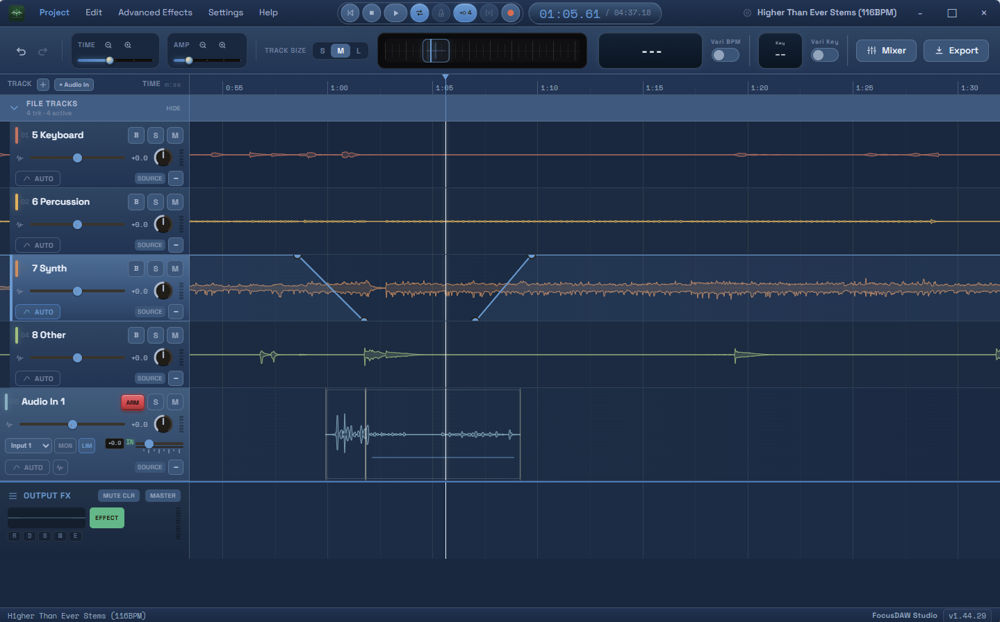
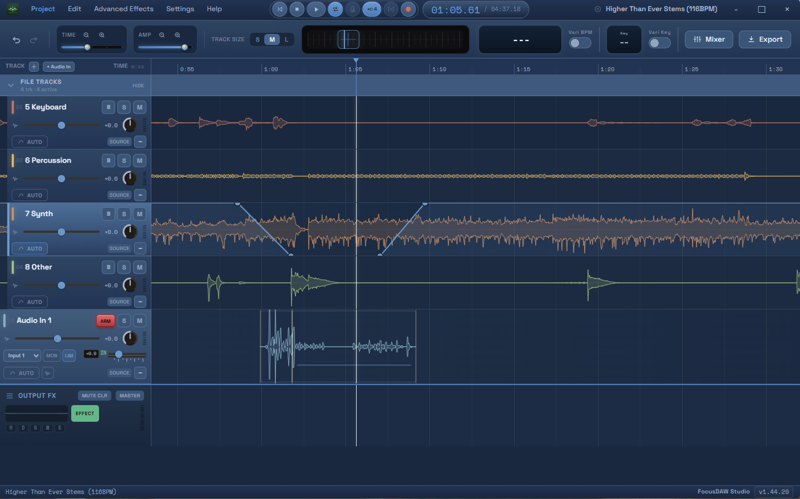
타임라인 위쪽의 긴 막대는 곡 전체에서 현재 보고 있는 위치를 보여 주는 미니맵입니다. 안쪽 선택 영역을 드래그하면 긴 프로젝트에서도 원하는 시간대로 단번에 이동할 수 있습니다.
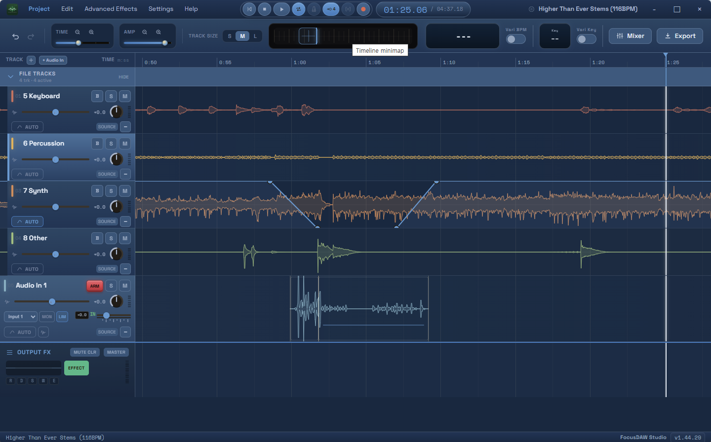
| 볼륨 슬라이더 | 트랙의 재생 레벨을 조절합니다. 0dB 지점은 슬라이더 중앙 눈금으로 표시됩니다. |
|---|---|
| Pan 노브 | 좌우 스테레오 위치를 조정합니다. |
| B 버튼 | BPM 측정 대상으로 사용할 트랙을 선택합니다. 한 번에 하나의 트랙만 선택됩니다. |
| S 버튼 | 해당 트랙만 듣는 Solo 기능입니다. Solo가 켜진 트랙이 있으면 다른 트랙은 자동으로 들리지 않습니다. |
| M 버튼 | 해당 트랙을 음소거합니다. |
| AUTO | 볼륨 오토메이션 레인을 켜고 끕니다(8장). |
| FX 버튼 | Audio In · Bounce 트랙에만 있습니다. 보컬 채널 스트립 창을 엽니다(4장). |
| SOURCE 칩 | 트랙의 원본 오디오가 정상 연결됐음을 뜻합니다. 파일을 찾지 못하면 붉은 NO SRC로 바뀝니다. |
| 레벨 미터 | 트랙의 현재 출력 레벨을 표시합니다. |
| − 버튼 | 트랙을 제거합니다. 확인 창에서 삭제를 확정해야 합니다. |
트랙 헤더의 제목을 더블클릭하면 그 자리에서 이름을 고칠 수 있습니다(Enter 확정, Esc 취소). 트랙 이름과 녹음 파일 이름은 따로 관리되므로, 트랙 이름을 바꿔도 디스크의 녹음 파일 이름은 그대로 유지됩니다.
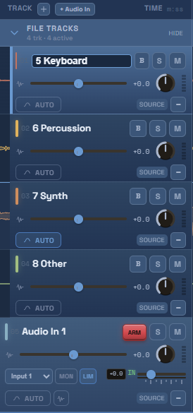
불러온 스템은 모두 FILE TRACKS 그룹으로 묶입니다. 그룹 머리글에는 “n trk · n active”처럼 전체 트랙 수와 소리가 나고 있는 트랙 수가 표시되고, 오른쪽 HIDE / SHOW로 그룹 전체를 접거나 펼칩니다.
| 일괄 뮤트 | 파일 트랙의 M 버튼을 Shift+클릭하면 모든 파일 트랙의 뮤트가 한 번에 켜지고 꺼집니다. 이때 그룹 머리글에 M4처럼 몇 개가 뮤트됐는지 배지가 표시됩니다. 믹서 창의 M 버튼에서도 똑같이 동작합니다. |
|---|---|
| 적용 대상 | 일괄 뮤트는 파일 트랙에만 적용됩니다. Audio In 트랙과 Bounce 트랙은 제외되므로, 스템을 통째로 음소거하고 자신의 녹음만 확인할 수 있습니다. |
| MUTE Clr | OUTPUT FX 헤더의 MUTE Clr 버튼을 누르면 모든 트랙의 뮤트·솔로가 한 번에 해제됩니다. |
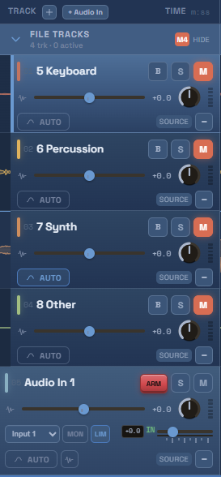
여러 스템을 하나의 오디오 트랙으로 합치는 기능입니다. 스템이 많아 화면이 복잡하거나, 반주 전체를 한 덩어리로 묶어 두고 보컬 작업에만 집중하고 싶을 때 씁니다.
합칠 파일 트랙들을 고른 뒤 FILE TRACKS 머리글 오른쪽의 MERGE TRACKS… 버튼을 누르면 설정 창이 열립니다. 이 버튼은 트랙을 2개 이상 선택해야 활성화되며, 버튼 왼쪽에 선택한 트랙 수가 표시됩니다.
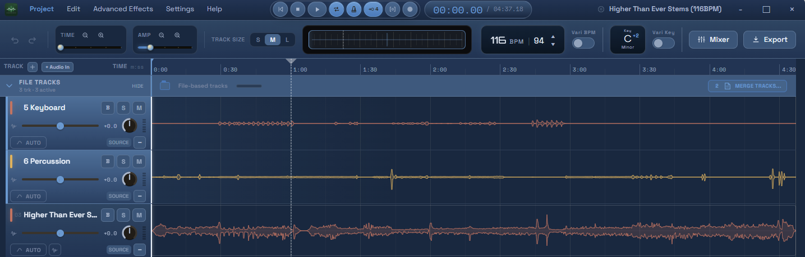
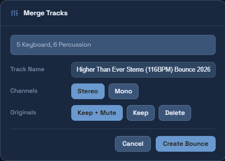
| Track Name | 만들어질 Bounce 트랙의 이름입니다. |
|---|---|
| Channels | Stereo 또는 Mono로 렌더링합니다. |
| Originals | 원본 트랙 처리 방식입니다. Keep + Mute(남기고 음소거·기본값) · Keep(그대로 남김) · Delete(삭제) 중에서 고릅니다. |
| Create Bounce | 렌더링을 시작합니다. 완료되면 새 Bounce 트랙이 만들어집니다. |
상단 Edit 메뉴의 Undo / Redo 아래에 Delete all tracks 항목이 있습니다. 현재 불러온 오디오 트랙만 모두 비우고, 마스터(프로젝트 전체)에 걸어 둔 이펙트 설정은 그대로 유지합니다. 같은 이펙트 체인(마스터 EQ·리버브·에코·Ambience·페이드 등)을 유지한 채 다른 스템 세트로 교체할 때 유용합니다.
| 유지되는 것 | 마스터 출력 이펙트(EQ, Reverb, Delay, Saturation, Widener, Exciter), Ambience, 마스터 페이드 등 프로젝트 전체 설정. |
|---|---|
| 사라지는 것 | 모든 오디오 트랙과 트랙별 설정(PAN, 트랙 볼륨/게인, 볼륨 오토메이션). BPM/Key도 빈 프로젝트처럼 ---로 초기화됩니다. |
| 되돌리기 | 삭제된 트랙의 오디오는 보관하지 않으므로 되돌릴 수 없습니다. 실행 시 Undo/Redo 기록도 비워집니다. |
Project > Save Project로 저장해 두세요. (참고: New Project는 트랙과 함께 마스터 이펙트까지 모두 초기화합니다.)The buttons at the top center drive playback and recording. The time readout on their right is current position / total length.
| Return to start | Moves the playhead back to 0 (0). |
|---|---|
| Stop | Stops playback (and recording). |
| Play / Pause | Toggles playback (Space). |
| Repeat | Loops a region, which you drag on the OUTPUT FX ruler lane. Combined with Record it stacks takes (ch. 4). |
| Metronome | Toggles the count-in click. Requires a project BPM to be enabled. |
| Pre-roll | Each press cycles 2s → 4s → 8s → off; the button shows the current length (default 4s). |
| Punch | Re-records only the Repeat region. Requires a region to be enabled (ch. 4). |
| Record | Starts recording. Requires an armed Audio In track. |
The bar above the timeline represents the whole song. Dragging the highlighted area moves the view instantly, even across long sessions.
| Volume Slider | Controls track volume. The center position marks nominal gain (0dB). |
|---|---|
| Pan Knob | Positions the track in the stereo field (Left/Right balance). |
| B Button | Selects the track used for BPM detection. Only one track can be selected at a time. |
| S Button | Solos the track (mutes all other non-soloed tracks). |
| M Button | Mutes the track. |
| AUTO | Toggles the volume automation lane (ch. 8). |
| FX Button | Present on Audio In and Bounce tracks only — opens the Vocal Channel Strip (ch. 4). |
| SOURCE chip | Confirms the track's source audio is linked. It turns into a red NO SRC chip when the file cannot be found. |
| Level Meter | Displays real-time playback output levels. |
| − Button | Deletes the track from the project (requires confirmation). |
Double-click a track title in the header to edit it in place (Enter to confirm, Esc to cancel). Track names and recording file names are handled separately, so renaming a track leaves the recorded files on disk untouched.
Imported stems are gathered under FILE TRACKS. The group header shows “n trk · n active” — total tracks and how many are actually sounding — and HIDE / SHOW folds or expands the whole group.
| Batch mute | Shift+click the M button on a file track to toggle mute on every file track at once. The group header then shows a badge such as M4 with the muted count. The M button in the Mixer window behaves the same way. |
|---|---|
| Scope | Batch mute affects file tracks only. Audio In and Bounce tracks are excluded, so you can silence the backing stems and check your own recording alone. |
| MUTE Clr | The MUTE Clr button on the OUTPUT FX header clears every mute and solo at once. |
Merging renders several stems down to a single audio track — useful when there are too many stems on screen, or when you want the whole backing as one block so you can focus on the vocal.
Select the file tracks to combine, then press MERGE TRACKS… at the right of the FILE TRACKS header. The button only becomes active once two or more tracks are selected, and shows the selected count beside it.
| Track Name | The name of the Bounce track that will be created. |
|---|---|
| Channels | Render as Stereo or Mono. |
| Originals | What happens to the source tracks: Keep + Mute (default), Keep, or Delete. |
| Create Bounce | Starts rendering; a new Bounce track appears when it finishes. |
The top Edit menu offers Delete all tracks below Undo / Redo. It clears all loaded audio tracks at once while keeping the master (project-wide) effect settings intact — handy when you want to swap in a different set of stems but keep the same effect chain (master EQ, reverb, echo, Ambience, fades, etc.).
| Kept | Master output effects (EQ, Reverb, Delay, Saturation, Widener, Exciter), Ambience, master fades — all project-wide settings. |
|---|---|
| Removed | Every audio track and its per-track settings (PAN, track volume/gain, volume automation). BPM/Key also reset to ---. |
| Undo | Deleted track audio is not retained, so this cannot be undone. Running it also clears the Undo/Redo history. |
Project > Save Project first if you need to keep the tracks. (New Project differs in that it also resets the master effects.)FocusDAW Studio는 트랙 오디오에서 곡의 BPM(분당 박자 수)을 자동으로 측정하고, 그 값을 기준으로 전체 음악의 재생 템포를 조정할 수 있습니다. 새 프로젝트의 BPM은 처음에 ---로 표시되며, 모든 트랙을 지우거나 새 프로젝트를 시작하면 다시 ---로 초기화됩니다.
BPM 표시기 오른쪽에는 Vari BPM 스위치가 있습니다. 이 스위치를 켜야 재생 BPM으로 곡 속도를 조정하며, 끄면 재생 BPM을 바꿔도 속도가 변하지 않습니다(기본값 OFF). 스위치를 켠 상태에서 BPM 표시기 위에 마우스 휠을 돌리거나 ▲▼ 버튼을 누르면 뒤쪽 재생 BPM이 1씩 바뀌고, 곡 전체가 그 비율(재생 BPM ÷ 프로젝트 BPM)만큼 빨라지거나 느려집니다.
---인 상태에서 스위치를 누르면 스위치가 흐리게 표시된 채 BPM 측정이 필요하다는 안내창이 뜹니다. 아래 ①~④ 절차로 BPM을 먼저 정하세요.먼저 어떤 트랙의 오디오로 BPM을 측정할지 정합니다. 트랙 헤더의 B 버튼을 누르면 그 트랙이 BPM 측정 소스로 선택되어 배경이 채워지며, B는 한 번에 한 트랙에만 켜집니다. 드럼처럼 박자가 뚜렷한 트랙을 고르면 측정이 더 정확합니다.
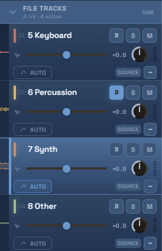
BPM 표시기를 클릭하면 아래로 설정 패널이 펼쳐집니다. 다시 누르거나, 마우스가 패널 밖으로 나간 채 5초가 지나면 접힙니다.
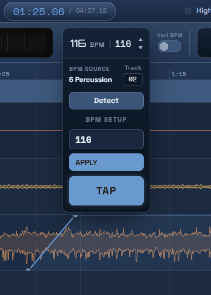
| Detect | B로 선택한 트랙의 오디오를 분석해 BPM을 자동 추정합니다. 추정값이 아래 입력칸에 채워집니다. |
|---|---|
| 직접 입력 | 입력칸에 BPM 숫자를 직접 적을 수 있습니다. |
| TAP | 음악을 들으며 박자에 맞춰 버튼을 반복해 누르면 BPM을 수동 측정합니다. 누를수록 값이 정확해지고, 버튼에는 실시간 BPM과 탭 횟수(TAP · n)가 표시됩니다. |
| APPLY | 측정/입력한 값을 프로젝트 BPM과 재생 BPM에 모두 적용합니다. |
자동 감지가 잘 맞지 않을 때는 TAP이 가장 확실합니다. 음악을 재생해 두고 박자에 맞춰 TAP 버튼을 반복해 누르면, 누른 간격의 평균으로 BPM이 계산됩니다. 버튼에는 지금까지의 추정값과 누른 횟수가 TAP · n 형태로 표시되며, 여러 번 누를수록 값이 안정됩니다.
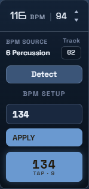
Detect를 누르면 분석이 진행되는 동안 버튼이 회전 아이콘과 Analyzing… 표시로 바뀝니다. 분석이 끝나면 추정된 BPM이 입력칸에 강조 효과와 함께 표시됩니다.
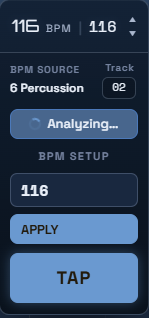
Vari BPM 스위치를 켠 뒤 재생 BPM(뒤 숫자)을 바꾸면 모든 트랙이 같은 비율로 빨라지거나 느려진 상태로 재생됩니다. 예를 들어 프로젝트 BPM이 100일 때 재생 BPM을 120으로 올리면 곡 전체가 1.2배 빠르게 재생됩니다.
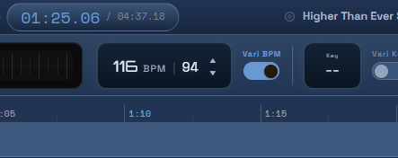
FocusDAW Studio detects a song's BPM (beats per minute) from a track's audio and lets you adjust the playback tempo of the whole song based on it. A new project starts with BPM shown as ---, and it returns to --- whenever you clear all tracks or start a new project.
The Vari BPM switch to the right of the indicator must be on for the playback BPM to change the song speed (off = no speed change; default off). With it on, hover the BPM indicator and scroll the mouse wheel, or use the ▲▼ buttons, to change the playback BPM by 1 — the whole song speeds up or slows down by that ratio (playback BPM ÷ project BPM).
--- the switch is dimmed, and clicking it opens a notice explaining that the BPM has to be measured first. Use steps 1–4 below to set one.Press the B button on a track header to mark it as the BPM detection source (its background fills in). Only one track can be the B source at a time. Picking a track with a clear beat (e.g. drums) gives more accurate detection.
Click the BPM indicator to expand the settings panel. Click it again, or leave it inactive outside the mouse area for 5 seconds, to collapse it.
| Detect | Analyzes the B-selected track's audio and estimates its BPM, filling the input field. |
|---|---|
| Manual input | Type a BPM value directly into the field. |
| TAP | Tap along with the beat repeatedly to measure BPM. Accuracy improves the more you tap, and the button shows a live BPM and tap count (TAP · n). |
| APPLY | Applies the measured/entered value to both the project BPM and the playback BPM. |
When automatic detection struggles, TAP is the most reliable route. Play the song and tap the button along with the beat — the BPM is averaged from your tap intervals. The button shows the running estimate and tap count as TAP · n, and the value settles the more you tap.
While Detect runs, the button changes to a spinner with Analyzing…. When it finishes, the estimated BPM appears in the input field with a brief highlight.
With the Vari BPM switch on, changing the playback BPM (the back number) plays every track faster or slower by the same ratio. For example, with a project BPM of 100, raising the playback BPM to 120 plays the whole song 1.2× faster.
FocusDAW Studio는 프로젝트에 로드된 트랙 오디오의 화성 성분을 종합적으로 분석하여 곡의 원곡 키(Key)를 자동으로 감지하고, 반음(Semitones) 단위로 곡의 조성을 올리거나 내려서 실시간으로 이조 재생할 수 있습니다. 처음 세션을 열었을 때 키 표시창은 ---로 표시됩니다.
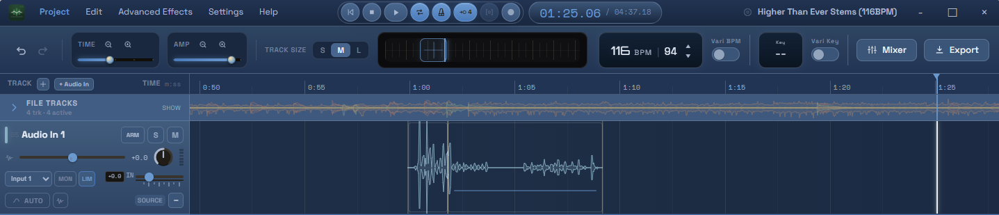
---로 표시됩니다.Key 표시창 부분을 클릭하면 아래로 Key 설정 패널이 펼쳐집니다. 이 패널은 클릭하여 켜고 끌 수 있으며, 마우스 포인터가 패널에서 벗어난 지 5초가 지나면 자동으로 닫힙니다.
패널 내의 Detect 버튼을 누르면 프로젝트의 활성화된 모든 오디오 트랙을 정밀 분석(STFT 기반 크로마 연산)하여 원곡의 키를 추정합니다. 결과는 하나의 원곡 Key이며, 패널 가운데의 원Key 표시창에 나타나고 하단 조성 목록에서도 강조 표시됩니다.
Analyzing... 상태를 거쳐 분석된 오디오의 감지된 키가 하단에 나타납니다.원하는 키 후보를 선택하거나, 패널 내의 + / - 버튼을 클릭해 원하는 반음(Semitones, 최대 ±6) 오프셋을 설정한 뒤 APPLY 버튼을 누르면 프로젝트의 기준 키가 세션에 등록됩니다.
Ab)가 표시됩니다.+1 반음과 같이 키 오프셋을 변경하고 APPLY 버튼을 눌러 적용을 완료한 화면입니다.Key 표시기 오른쪽의 Vari Key 스위치를 켜면, 사용자가 변경한 조(Key)의 피치가 재생 엔진에 즉각 반영되어 음높이가 실시간으로 변조(Pitch Shift)되어 플레이됩니다. 스위치를 끄면 원래 녹음된 피치 그대로 재생됩니다.
FocusDAW Studio analyzes the harmonic content of all loaded audio tracks to estimate the song's original key and lets you shift the pitch up or down in semitones (up to ±6 semitones) for real-time key-shifted playback. When a new session is opened, the Key indicator reads ---.
--- when no key is set.Click the Key indicator in the toolbar to expand the Key settings panel. You can toggle the panel open and closed by clicking it, and it will close automatically 5 seconds after the mouse pointer leaves the panel area.
Click the Detect button in the panel to run a comprehensive harmonic analysis (STFT-based chromagram) across all active audio tracks. It produces one original key, shown in the original-key box in the middle of the panel and highlighted in the key list below it.
Analyzing... state, then reveals the detected key details.Select your preferred candidate key, or use the + / - buttons to adjust the semitones offset (up to ±6 semitones), then click APPLY to write the reference key to the project.
Ab).+1 semitone) and applying the changes.Enable the Vari Key switch next to the Key indicator to apply your pitch shifts directly to the playback engine in real-time. Turning the switch off reverts the playback pitch back to the original recorded audio state.
트랙 헤더의 VOL AUTO를 켜면 트랙 위에 볼륨 오토메이션 곡선이 표시됩니다. 곡선의 점은 시간에 따른 볼륨 변화를 의미합니다.
| 마우스 왼쪽 버튼 클릭 | 오토메이션 선 위를 클릭하면 새 편집점이 추가됩니다. |
|---|---|
| 편집점 드래그 | 편집점 위에 마우스를 올리면 손 모양 커서로 바뀝니다. 그 상태에서 마우스 왼쪽 버튼을 누른 채 움직이면 편집점의 시간 위치와 볼륨 값을 이동할 수 있습니다. |
| 마우스 오른쪽 버튼 클릭 | 편집점 위에 마우스를 올려 손 모양 커서가 보이는 상태에서 오른쪽 마우스 버튼을 누르면 해당 편집점이 삭제됩니다. 시작점과 끝점은 삭제되지 않습니다. |
오토메이션 선 위를 클릭해 포인트를 추가하고, 포인트를 드래그해 볼륨 변화 시점과 크기를 조절합니다. 아래로 내린 구간은 소리가 작아지고, 위로 올린 구간은 원래 볼륨에 가깝게 재생됩니다.
Curve를 켜면 포인트 사이가 직선이 아니라 부드러운 곡선으로 이어집니다. 급격한 볼륨 변화보다 자연스러운 페이드나 강조를 만들 때 유용합니다.
Toggling VOL AUTO in the track header displays a yellow automation lane over the track lane. Points on this line represent volume changes over time.
| Left-click line | Creates a new automation point at the cursor position. |
|---|---|
| Drag point | Hover over a point to see a hand cursor, then drag to change time and volume values. |
| Right-click point | Right-click a point while the hand cursor is visible to delete it (anchors excluded). |
Add points and adjust them to shape volume over time. Pulling the line down attenuates volume, while dragging it up approaches original volume.
Enabling **Curve** shapes the paths between points with smooth bezier curves. This is useful for creating organic fade-ins, fade-outs, or natural volume rises.
상단 오른쪽의 Mixer 버튼을 누르면 떠 있는 믹서 창이 열립니다. 믹서 창은 제목 표시줄을 드래그해 위치를 옮길 수 있습니다.
믹서 창 제목 표시줄에는 정지 · 재생 버튼이 있어, 메인 창으로 돌아가지 않고도 믹서에서 바로 재생을 조작할 수 있습니다.
| VRB | 트랙 리버브 전송량입니다. |
|---|---|
| ECHO | 트랙 에코/딜레이 전송량입니다. |
| S / M | Solo와 Mute입니다. M을 Shift+클릭하면 파일 트랙 일괄 뮤트가 동작합니다(5장). |
| PAN | 좌우 스테레오 위치입니다. 아래에 현재 값(C / L · R)이 표시됩니다. |
| Fader | 트랙 볼륨을 세로 페이더로 조절하고, 맨 아래 dB 값으로 확인합니다. |
Audio In 트랙의 채널 스트립에는 아래쪽에 녹음 전용 구역이 더 붙습니다. ARM · MON · LIM 버튼과 입력 포트 선택, 큰 GAIN 노브, 그리고 그 오른쪽의 IN(입력 레벨) · GR(리미터 게인 리덕션) 미터입니다. 덕분에 믹서 창만 보면서도 입력 게인을 잡을 수 있습니다.
MASTER 패널은 최종 출력에 적용되는 설정입니다. 9밴드 Graphic EQ, 마스터 볼륨(VOL), EQ 프리셋, 그리고 다섯 가지 OUTPUT EFFECTS(Reverb · Delay · Saturation · Widener · Exciter / Enhancer)를 제공합니다. 패널 오른쪽 위에는 현재 피크 레벨(dB)이 표시됩니다.
EQ 그래프 위쪽의 GRAPHIC EQ · FFT와 LEVEL METER 버튼으로 배경 표시를 바꿀 수 있습니다. FFT는 실시간 주파수 스펙트럼을, LEVEL METER는 대역별 LED 레벨 미터를 보여 줍니다.
| Graphic EQ · FFT | 스펙트럼 배경 위에 EQ 곡선을 표시합니다. 각 밴드 포인트를 드래그해 -12dB부터 +12dB까지 조절합니다. |
|---|---|
| Level meter | 주파수 대역별 레벨 미터를 표시합니다. EQ 포인트 오버레이도 함께 조작할 수 있습니다. |
| EQ PRESET | Reset(Flat), Pop, Classic, Hip Hop 프리셋을 바로 적용합니다. 정밀 편집은 오른쪽 ADVANCED 버튼으로 큰 Equalizer 창을 엽니다(7장 참조). |
| OUTPUT EFFECTS | 최종 출력(마스터 버스)에 적용하는 다섯 가지 효과입니다. 각 슬라이더로 0~100% 전송량을 조절하며, 켜진 효과는 아이콘에 색이 들어오고 오른쪽에 퍼센트가 표시됩니다. |
| Reverb | 잔향(공간감)을 더합니다. 값이 클수록 더 넓고 멀리 울리는 공간처럼 들립니다. |
|---|---|
| Delay | 반복되는 메아리(에코)를 추가해 리듬감 있는 반사로 공간을 넓힙니다. |
| Saturation | 아날로그 테이프/진공관식 배음을 더해 소리를 따뜻하고 두툼하게 만듭니다. |
| Widener | 스테레오 폭을 넓혀 믹스를 크고 시원하게 들리게 합니다. |
| Exciter / Enhancer | 고역대 배음을 보강해 선명함과 반짝임(공기감)을 살립니다. |
EQ 프리셋 줄에서는 Reset · POP · Classic · HIP HOP을 바로 적용할 수 있고, OUTPUT EFFECTS 오른쪽의 ADVANCED 버튼은 정밀 편집용 Equalizer 창을 엽니다(10장).
타임라인 맨 아래의 OUTPUT FX 트랙은 Master 트랙 역할을 하며, 전체 믹스에 적용되는 페이드와 EQ·효과 상태를 보여 줍니다. 이 트랙의 눈금 레인이 Repeat · Punch 구간을 드래그해 만드는 자리이기도 합니다(4장).
| 왼쪽 점 드래그 | OUTPUT FX 트랙 왼쪽의 초록 점을 좌우로 드래그하면 곡 시작 부분에 Fade in 효과를 줄 수 있습니다. 점을 오른쪽으로 옮길수록 서서히 커지는 시간이 길어집니다. |
|---|---|
| 오른쪽 끝 점 드래그 | OUTPUT FX 트랙 오른쪽 끝의 빨간 점을 좌우로 드래그하면 곡 끝부분에 Fade out 효과를 줄 수 있습니다. 점을 왼쪽으로 옮길수록 서서히 작아지는 시간이 길어집니다. |
| 적용 범위 | Fade in/out은 개별 트랙이 아니라 최종 Master 출력에 적용되며, 재생과 믹스다운 내보내기에 모두 반영됩니다. |
Click the Mixer button on the top right to open the floating mixer console. Drag its title bar to position it anywhere on the screen.
The mixer's own title bar carries Stop and Play buttons, so you can drive playback without switching back to the main window.
| VRB | Track reverb send level. |
|---|---|
| ECHO | Track echo/delay send level. |
| S / M | Solo and Mute. Shift+click M to batch-mute the file tracks (ch. 5). |
| PAN | Stereo position, with the current value (C / L · R) shown beneath. |
| Fader | Vertical volume fader with the exact dB value at the bottom. |
An Audio In track's strip adds a recording section below. It carries ARM · MON · LIM, the input port selector, a large GAIN knob, and IN (input level) and GR (limiter gain reduction) meters beside it — so input gain can be set entirely from the mixer.
The MASTER panel shapes the final stereo mixdown: a 9-band Graphic EQ, master volume (VOL), EQ presets, and five OUTPUT EFFECTS (Reverb, Delay, Saturation, Widener, Exciter / Enhancer). The current peak level (dB) is shown at the panel's top right.
The GRAPHIC EQ · FFT and LEVEL METER buttons above the graph switch its background: FFT draws a live frequency spectrum, LEVEL METER shows per-band LED meters.
| Graphic EQ / FFT | Displays the EQ curve over a real-time FFT spectrum background. Drag points to adjust gain from -12dB to +12dB. |
|---|---|
| Level meters | Displays real-time level bars for each frequency range alongside EQ controls. |
| EQ PRESETS | Instantly applies preset curves: Reset (Flat), Pop, Classic, and Hip Hop. The ADVANCED button opens the large Equalizer window (see ch.7). |
| OUTPUT EFFECTS | Five effects applied to the final master bus. Each slider sets the 0–100% send amount; active effects light up and show their percentage on the right. |
| Reverb | Adds reverberation; higher amounts feel like a larger, more distant room. |
|---|---|
| Delay | Adds repeating echoes — rhythmic reflections that widen the sound and add depth. |
| Saturation | Adds gentle analog tape/tube harmonics for a warmer, thicker tone. |
| Widener | Expands stereo width so the mix sounds bigger and more open. |
| Exciter / Enhancer | Reinforces high-frequency harmonics for clarity and "air." |
The EQ preset row applies Reset · POP · Classic · HIP HOP instantly, and the ADVANCED button beside OUTPUT EFFECTS opens the large Equalizer window for precise editing (ch. 10).
At the bottom of the timeline, the OUTPUT FX track represents the Master channel and shows the master fades plus the EQ/effect state. Its ruler lane is also where you drag out Repeat and Punch regions (ch. 4).
| Green Handle (Left) | Drag horizontally to define a Fade-In duration at the start of the mix. |
|---|---|
| Red Handle (Right) | Drag horizontally to define a Fade-Out duration at the end of the mix. |
| Scope | Master fades apply directly to the final mix, affecting both real-time playback and rendered files. |
상단 메뉴의 Advanced Effects에는 세 가지 전용 편집 창이 있습니다. 각 창은 마스터(프로젝트 전체) 출력에 적용되는 고급 효과를 넓은 화면에서 정밀하게 다루도록 만들어졌습니다.
| Ambience | 곡 전체의 공간감(잔향·울림)을 디자인하는 Sound Environment 창을 엽니다. |
|---|---|
| Auto Panning | 각 악기를 좌우·원근으로 배치하는 Spatial Field(스테레오 무대) 창을 엽니다. |
| Equalizer Setup | 9밴드 그래픽 EQ를 큰 화면에서 편집하고 사용자 프리셋을 저장하는 Equalizer 창을 엽니다. |
세 고급 창은 모두 왼쪽 위에 창 전환 드롭다운을 공유합니다. 창을 닫지 않고도 Spatial Field → Ambience → Equalizer 사이를 바로 오갈 수 있습니다.
Ambience는 곡 전체가 어떤 공간에서 울리는지를 정하는 창입니다. 위쪽 SOUND ENVIRONMENT에서 공간 프리셋을 고른 뒤, 왼쪽 노브와 오른쪽 슬라이더로 잔향의 길이·거리감·밝기를 다듬습니다.
각 공간 프리셋의 음악적 효과 — 이름이 곧 어떤 음악적 결과를 내는지를 뜻합니다.
| Reset (Dry) | 잔향을 모두 끈 건조한 상태. 울림 없이 소리가 가깝고 또렷합니다. 원음 확인·기준점 복귀용. |
|---|---|
| Concert Hall | 큰 공연장처럼 길고 풍성한 잔향. 오케스트라·발라드·합창에 웅장하고 깊은 공간감. |
| Home | 작은 방의 짧고 자연스러운 울림. 보컬·어쿠스틱 기타에 어울리는 은은한 실내 공기감. |
| Far Field | 소리가 멀리서 들리는 듯한 거리감 + 한 번 튕기는 슬랩 에코. 빈티지·로파이·몽환적 분위기. |
| Studio | 녹음 스튜디오 같은 짧고 단단한 잔향. 모던 팝/록에서 선명함 유지하며 살짝만 공간 부여. |
| Tunnel | 터널·복도처럼 금속성 반사가 강한 긴 잔향. 특수효과·앰비언트·드라마틱한 연출. |
| Custom | 아래 노브·슬라이더로 직접 조정한 나만의 공간 설정을 보관. |
세부 조절(FINE-TUNE 노브 · 오른쪽 슬라이더)
| MIX | 원음과 잔향의 비율. 높일수록 울림이 많아지고, 낮추면 원음이 또렷해집니다. |
|---|---|
| ECHO | 잔향에 섞이는 반복 반사(에코)의 양. 리듬감 있는 공간 반사를 더합니다. |
| WIDTH | 잔향의 스테레오 폭. 높이면 공간감이 좌우로 넓게 펼쳐집니다. |
| DECAY | 잔향 꼬리가 사라지는 길이(Short↔Long). 길수록 큰 공간처럼 오래 울립니다. |
| PRE-DELAY | 원음 뒤 잔향이 시작되기까지의 시간(Near↔Late). 길수록 더 큰 공간감, 원음이 묻히지 않음. |
| ROOM SIZE | 가상 공간의 크기(Small↔Large). 잔향의 밀도·두께를 좌우합니다. |
| DAMPING | 잔향의 고역 흡수(밝기)(Dark↔Bright). 어두우면 따뜻하게, 밝으면 화사하게 울립니다. |
Ambience 창 아래쪽에는 믹서 MASTER와 동일한 OUTPUT EFFECTS(Reverb · Delay · Saturation · Widener · Exciter / Enhancer)가 함께 있어, 공간감을 잡으면서 마스터 출력 효과까지 한 화면에서 조정할 수 있습니다.
Auto Panning은 각 악기(트랙)를 반원형 스테레오 무대 위에 배치하는 창입니다. 위쪽 무대에서 악기 노드를 드래그해 좌우(팬)와 앞뒤(거리) 위치를 정하고, 아래쪽 트랙별 노브로 값을 미세 조정합니다. 악기를 서로 다른 자리에 펼쳐 두면 겹침이 줄어 믹스가 더 또렷하고 입체적으로 들립니다. 리뉴얼된 Spatial Field 창의 우측에는 전체 믹스 볼륨을 조절할 수 있는 볼륨 슬라이더가 추가되었습니다. 게인을 과도하게 올려 사운드가 클리핑 임계값에 도달하면 슬라이더 배경이 붉은색으로 변하며 사운드 포화(Saturation) 경고가 표시됩니다.
믹서 MASTER의 EQ를 큰 화면에서 다루는 전용 창입니다. 실시간 FFT 스펙트럼 위에 9개 밴드 포인트가 놓여 있고, 각 포인트를 위아래로 드래그하면 저역~고역의 양을 ±로 조절하며 그 값(dB)이 포인트 아래에 표시됩니다.
사용자 EQ 프리셋 저장 · 불러오기 · 이름 변경 — PRESET 아래 USER 줄에는 사용자 슬롯(내 EQ 1~5)이 있습니다. 슬롯을 누르면 작은 메뉴가 열립니다.
| Save here | 현재 EQ 곡선을 그 슬롯에 저장합니다. |
|---|---|
| Recall | 슬롯에 저장된 EQ 설정을 불러와 적용합니다. |
| Rename… | 슬롯의 이름을 변경합니다. 자주 쓰는 설정을 알아보기 쉽게 이름 붙일 수 있습니다. |
The top Advanced Effects menu opens three dedicated editing windows, each giving you a larger workspace to fine-tune advanced effects applied to the master (project-wide) output.
| Ambience | Opens the Sound Environment window for designing the overall space (reverb/ambience). |
|---|---|
| Auto Panning | Opens the Spatial Field stereo-stage window for placing each instrument left/right and near/far. |
| Equalizer Setup | Opens the large Equalizer window to edit the 9-band graphic EQ and store user presets. |
All three advanced windows share a window switcher dropdown at the top left. Jump between Spatial Field → Ambience → Equalizer without closing the window.
Ambience defines what space the whole song echoes in. Pick a space preset under SOUND ENVIRONMENT, then refine the length, distance, and brightness of the reverb with the knobs on the left and sliders on the right.
The musical effect of each space preset — the name tells you the musical result.
| Reset (Dry) | All reverb off — a dry, close, crisp sound. Use it to hear the raw source or return to a baseline. |
|---|---|
| Concert Hall | A long, lush reverb like a large hall. Grand, deep space for orchestras, ballads, and choirs. |
| Home | A small room's short, natural ambience. Subtle indoor air for vocals and acoustic guitar. |
| Far Field | Sound heard from a distance plus a single slap-back echo. Great for vintage, lo-fi, dreamy moods. |
| Studio | A short, tight reverb like a recording studio. Keeps modern pop/rock clear with a touch of space. |
| Tunnel | A long, metallic reverb with strong reflections. Suited to special effects, ambient, and drama. |
| Custom | Stores your own space shaped with the knobs and sliders below. |
Fine-tuning (FINE-TUNE knobs · right-side sliders)
| MIX | The balance between dry and reverberant sound. Higher = more space; lower = crisper original. |
|---|---|
| ECHO | The amount of repeating reflections (echo) blended into the reverb. |
| WIDTH | The stereo width of the reverb. Raise it to spread the space wider. |
| DECAY | How long the reverb tail lasts (Short↔Long). |
| PRE-DELAY | The time before the reverb begins after the dry sound (Near↔Late); longer feels like a bigger space. |
| ROOM SIZE | The size of the virtual space (Small↔Large). |
| DAMPING | The reverb's high-frequency absorption (brightness) (Dark↔Bright). |
The bottom of the Ambience window also includes the same OUTPUT EFFECTS as the mixer MASTER (Reverb, Delay, Saturation, Widener, Exciter / Enhancer), so you can shape the space and master output effects on one screen.
Auto Panning places each instrument (track) on a fan-shaped stereo stage. Drag the instrument nodes to set their left/right (pan) and front/back (distance), and fine-tune with the per-track knobs below. Spreading instruments apart reduces overlap, making the mix clearer and more three-dimensional. In the renewed Spatial Field window, a master volume slider has been added to the right side. If you increase the gain excessively so that the signal level reaches clipping threshold, the level indicator turns red to warn about sound saturation.
A dedicated window for editing the mixer MASTER EQ on a large canvas. Nine band points sit over a real-time FFT spectrum; drag a point up or down to boost/cut from lows to highs, with its value (dB) shown beneath it.
Save, recall, and rename user EQ presets — below PRESET, the USER row holds user slots (My EQ 1–5). Clicking a slot opens a small menu.
| Save here | Saves the current EQ curve into that slot. |
|---|---|
| Recall | Loads and applies the EQ stored in the slot. |
| Rename… | Renames the slot so favorite settings are easy to recognize. |
Export 버튼 또는 Project > Export... 메뉴를 누르면 Export mixdown 창이 열립니다. 실제 내보내기 창에서는 MP3와 WAV 중 하나를 고를 수 있습니다.
| File name | 저장될 파일 이름입니다. 프로젝트 이름이 기본값으로 들어갑니다. |
|---|---|
| Format | MP3 또는 WAV를 선택합니다. |
| Bitrate | MP3 출력 시 192, 256, 320kbps 중에서 선택합니다. |
| Sample rate | 44.1kHz 또는 48kHz로 렌더링합니다. |
| Normalize | 스위치를 켜면 목표 음량(LUFS)에 맞춰 라우드니스 정규화를 적용합니다. -9(loud master), -12(loud), -14(streaming), -16(podcast), -23(broadcast) LUFS 중에서 목표를 고를 수 있습니다. |
| Keep pitch | Vari BPM으로 출력 템포를 바꿀 때 Export 파일에 피치 보존 Time Stretch를 적용합니다. Electron 데스크톱에서는 현재 ffmpeg atempo 기준선을 사용하며, 실시간 재생은 캐시형 Time Stretch 프리뷰를 사용합니다. |
오른쪽 AUDIO INFO (TAGS)에서 Title · Artist / Composer · Album · Year · Date를 입력합니다. MP3 형식에서는 Album art까지 넣을 수 있으며, 프리셋 커버를 고르거나 이미지 파일을 직접 지정할 수 있습니다.
Click the Export button or go to Project > Export... to open the Export dialog. The dialog supports exporting in either MP3 or WAV format.
| File name | The output filename, pre-filled from the project name. |
|---|---|
| Format | Choose MP3 or WAV format. |
| Bitrate | Choose 192, 256, or 320kbps for MP3 compression quality. |
| Sample rate | Select 44.1kHz or 48kHz for output rendering. |
| Normalize | When enabled, applies loudness normalization to a target LUFS. Choose from -9 (loud master), -12 (loud), -14 (streaming), -16 (podcast), or -23 (broadcast) LUFS. |
| Keep pitch | Applies pitch-preserving Time Stretch to exported files when Vari BPM changes the output tempo. Electron desktop currently uses the ffmpeg atempo baseline; realtime playback uses a cached Time Stretch preview. |
Fill in Title · Artist / Composer · Album · Year · Date under AUDIO INFO (TAGS) on the right. MP3 exports can also embed Album art — pick a preset cover or choose your own image file.
상단 메뉴의 Settings를 누르면 설정 창이 열립니다. 왼쪽 CONTENTS 목록으로 Color Theme · Mixer Console Window · Audio Devices 세 영역을 오갈 수 있습니다.
10가지 테마 중 하나를 고르면 메인 창과 믹서·보컬 스트립·고급 이펙트 창까지 전부 즉시 같은 색으로 바뀝니다. 각 카드에는 미리보기와 성격을 설명하는 한 줄이 함께 표시됩니다.
| 어두운 테마 | Warm Analog(기본) · Modern Blue · Milky Purple · Clownfish · Neon Lime · Minimal Slate · Antique Olive · Ocean |
|---|---|
| 밝은 테마 | Classical Ivory · Sage Mist |
Audio In 트랙 영역의 배경 질감을 고릅니다. None(기본) · Diagonal · Dots · Brushed · Edge Lines 중에서 선택하며, 녹음 트랙을 파일 트랙과 시각적으로 더 뚜렷이 구분하고 싶을 때 씁니다. 소리에는 아무 영향이 없습니다.
믹서 창을 화면 구석으로 치워 두었거나 크기를 크게 바꿔 놓았다면 Reset Position을 누르세요. 기억해 둔 좌표와 크기가 지워져 다음에 열 때 화면 중앙에 기본 크기로 나타납니다.
Audio Devices 섹션에서 녹음과 재생에 쓸 오디오 장치를 지정합니다(4장의 사전 준비). 설정 순서는 모드 → 입력/출력 장치 → Sample Rate / Buffer입니다.
| 모드(드라이버 타입) | Shared(공유·기본) · Exclusive(단독 점유) · Low Latency(낮은 지연) 중에서 고릅니다. 선택한 모드에 해당하는 장치만 아래 목록에 나타납니다. |
|---|---|
| 입력 / 출력 장치 | 녹음에 쓸 입력 장치와 재생에 쓸 출력 장치를 고릅니다. 트랙별 입력 포트(모노/스테레오 채널) 목록은 여기서 고른 입력 장치의 채널을 따릅니다. |
| Exclusive 자동 페어링 | Exclusive 모드에서는 입력·출력을 모두 가진 인터페이스만 보이고, 입력을 고르면 같은 인터페이스의 출력이 자동으로 짝지어집니다. |
| Sample Rate / Buffer | 샘플레이트와 버퍼 크기입니다. 버퍼가 작을수록 지연은 줄지만 CPU 부하와 끊김 위험이 커집니다. |
| 현재 상태 · 지연 표시 | 드롭다운 아래에 지금 열려 있는 입력·출력 장치와 샘플레이트·버퍼가 요약되고, 그 아래 줄에 입력 · 출력 · 왕복(round-trip) 지연 추정치가 표시됩니다. |
| Rescan | 연결한 장치가 목록에 없으면 다시 검색합니다. |
오디오 장치는 입력을 붙잡아 앱에 넘기기까지 아주 짧은 시간이 걸립니다. 보정하지 않으면 녹음된 소리가 반주보다 조금씩 늦게 놓이는데, Recording offset이 이를 자동으로 맞춰 줍니다.
| Auto (기본) | 체크해 두면 드라이버가 보고한 지연값을 그대로 사용합니다. 대부분 이대로 두면 됩니다. |
|---|---|
| 수동 입력 | Auto를 끄고 밀리초(ms)를 직접 넣습니다. 양수는 녹음을 앞으로 당기고(입력 지연 보정), 음수는 뒤로 미룹니다. |
| Offset Cal. | 녹음 클립을 귀로 맞춰 옮겼다면, 그 클립을 오른쪽 클릭해 Recording Offset Cal.을 실행하세요. 손으로 맞춘 간격이 전역 Recording offset에 반영되어 이후 녹음은 처음부터 제자리에 놓입니다. |
| Exclusive | 지연이 가장 낮지만, 하나의 장치를 앱이 독차지하므로 다른 프로그램 소리가 나지 않습니다. 샘플레이트도 앱이 정합니다. |
|---|---|
| Low Latency | 지연이 낮고 다른 프로그램 소리도 들립니다. 실제 지연은 드라이버에 따라 다릅니다. |
| Shared (기본) | 지연은 보통이지만 가장 안정적이며 다른 프로그램과 함께 쓸 수 있습니다. 평소에는 이 모드를 권장합니다. |
Click Settings in the menu bar to open the settings window. The CONTENTS list on the left moves between Color Theme · Mixer Console Window · Audio Devices.
Choosing one of the ten themes instantly recolors everything — the main window, the mixer, the vocal strip, and the advanced effect windows. Each card shows a preview and a one-line description of its character.
| Dark themes | Warm Analog (default) · Modern Blue · Milky Purple · Clownfish · Neon Lime · Minimal Slate · Antique Olive · Ocean |
|---|---|
| Light themes | Classical Ivory · Sage Mist |
Sets the background texture of Audio In track lanes — None (default), Diagonal, Dots, Brushed, or Edge Lines. Use it to make recording tracks stand out more clearly from file tracks. It has no effect on the audio.
If you have parked the mixer in a screen corner or resized it heavily, press Reset Position. The remembered bounds are cleared and the window reopens centred at its default size.
The Audio Devices section is where you choose the devices used for recording and playback (the prerequisite for ch. 4). The order is mode → input/output device → Sample Rate / Buffer.
| Mode (driver type) | Choose Shared (default), Exclusive (sole ownership), or Low Latency. Only devices for the selected mode are listed below. |
|---|---|
| Input / Output device | Pick the input device for recording and the output device for playback. Each track's input port (mono/stereo channel) list follows the channels of the input device chosen here. |
| Exclusive auto-pairing | In Exclusive mode only interfaces with both input and output appear, and choosing an input auto-selects the matching output of the same interface. |
| Sample Rate / Buffer | A smaller buffer lowers latency but raises CPU load and the risk of dropouts. |
| Active state & latency | Below the dropdowns, a line summarises the currently open input/output, sample rate, and buffer; the next line estimates input, output, and round-trip latency. |
| Rescan | Searches again if a connected device is missing from the list. |
An audio device takes a small amount of time to capture your input and hand it to the app. Without compensation, recordings land slightly late against the backing track — Recording offset corrects that automatically.
| Auto (default) | Uses the latency the driver reports. Leave it on unless you have a reason not to. |
|---|---|
| Manual | Turn Auto off and type a value in milliseconds. Positive pulls recordings earlier (compensating capture delay); negative pushes them later. |
| Offset Cal. | If you nudged a recorded clip into place by ear, right-click it and run Recording Offset Cal. — that manual alignment is folded into the global Recording offset so future takes land pre-aligned. |
| Exclusive | Lowest latency, but the app takes over one device for input+output, so other apps are muted and the app sets the sample rate. |
|---|---|
| Low Latency | Low latency while other apps stay audible. The real figure depends on the driver. |
| Shared (default) | Normal latency but the most stable, and it shares the device with other apps. Recommended for everyday use. |
| Space | 재생 / 일시정지 |
|---|---|
| F3 | 믹서 콘솔(Mixer) 열기 / 닫기 |
| 0 | Play bar를 0초로 이동 |
| , 또는 < | Play bar를 1초 뒤로 이동 |
| . 또는 > | Play bar를 1초 앞으로 이동 |
| ← | Play bar를 1초 뒤로 이동 |
| → | Play bar를 1초 앞으로 이동 |
| Ctrl + S | 프로젝트 저장 |
| Ctrl + O | 프로젝트 열기 |
| Ctrl + Z | 실행 취소 |
| Ctrl + Y | 다시 실행 |
| Ctrl + Shift + Z | 다시 실행 |
| S | 선택 도구 |
|---|---|
| C | 자르기(가위) 도구 — 클립 Split |
| J | 합치기 도구 — 클립 Merge |
| Esc | 클립 선택 해제(도구도 함께 해제) |
|---|---|
| Del 또는 Backspace | 선택한 클립 삭제 |
| Ctrl + C | 클립 복사 |
| Ctrl + V | 재생 위치에 붙여넣기 |
| Ctrl + D | 클립 복제 |
| ← / → | 클립 미세 이동 — 1 ms |
| Ctrl + ← / → | 클립 미세 이동 — 10 ms |
| Shift + ← / → | 클립 미세 이동 — 100 ms |
| Ctrl + 클릭 | 여러 클립을 함께 선택 |
| Space | Play / Pause |
|---|---|
| F3 | Open / Close Mixer Console |
| 0 | Move the play bar to 0 seconds |
| , or < | Move the play bar backward by 1 second |
| . or > | Move the play bar forward by 1 second |
| ← | Move the play bar backward by 1 second |
| → | Move the play bar forward by 1 second |
| Ctrl + S | Save Project |
| Ctrl + O | Open Project |
| Ctrl + Z | Undo |
| Ctrl + Y | Redo |
| Ctrl + Shift + Z | Redo |
| S | Select tool |
|---|---|
| C | Scissors tool — split clips |
| J | Join tool — merge clips |
| Esc | Deselect the clip (and release the active tool) |
|---|---|
| Del or Backspace | Delete the selected clip |
| Ctrl + C | Copy the clip |
| Ctrl + V | Paste at the playhead |
| Ctrl + D | Duplicate the clip |
| ← / → | Nudge the clip — 1 ms |
| Ctrl + ← / → | Nudge the clip — 10 ms |
| Shift + ← / → | Nudge the clip — 100 ms |
| Ctrl + click | Select several clips at once |
저장된 출력 장치가 연결 해제된 경우입니다. Settings ▸ Audio Devices에서 지금 연결된 출력 장치를 다시 고르세요. 시작할 때 저장된 장치를 열지 못하면 앱이 시스템 기본 장치로 되돌리고 경고를 표시합니다.
원본 오디오 파일의 위치가 바뀌었을 가능성이 큽니다. 같은 파일을 그 트랙 위로 끌어다 놓거나 다시 가져오면 앱이 파일 이름·경로 기준으로 재연결합니다. 프로젝트를 통째로 옮길 때는 Save As…로 저장하면 녹음·바운스가 함께 모아져 안전합니다(2장).
Settings ▸ Audio Devices ▸ Recording offset을 확인하세요. 기본값인 Auto가 대부분 맞지만, 어긋난다면 Auto를 끄고 ms 값을 직접 조정하거나, 귀로 맞춘 클립에서 오른쪽 클릭 ▸ Recording Offset Cal.로 그 값을 전역 설정에 반영하세요(12장).
버퍼가 너무 작거나 드라이버 모드가 불안정한 경우입니다. Buffer를 키우고, 모드를 Shared로 되돌려 보세요. 지연을 낮출수록 안정성은 떨어집니다(12장).
ARM된 Audio In 트랙이 없기 때문입니다. 녹음할 트랙의 ARM 버튼을 먼저 켜세요. Punch 버튼이 눌리지 않는다면 Repeat 구간이 없기 때문이고, 메트로놈이 눌리지 않는다면 프로젝트 BPM이 아직 없기 때문입니다(4장 · 6장).
여러 번 다시 녹음하면 쓰이지 않는 테이크 파일이 쌓입니다. Project ▸ Clean Up Unused Recordings…로 정리하세요. 되돌리기 기록에 남아 있는 파일은 제외되고, 삭제가 아니라 휴지통으로 이동합니다(2장).
MP3 인코딩은 앱에 함께 설치되는 변환기(ffmpeg)가 처리합니다. MP3 저장이 실패하면 ① 저장 위치에 쓰기 권한이 있는지(다른 폴더로 저장해 보기), ② 같은 이름의 파일이 다른 프로그램에서 열려 있지 않은지, ③ 디스크 여유 공간이 충분한지 확인하세요. 그래도 실패하면 WAV로 먼저 저장해 작업물을 안전하게 확보한 뒤, 앱을 다시 설치해 주세요.
FocusDAW Studio의 최소 창 크기는 1258x600입니다. 믹서나 Export 창이 좁게 보이면 창을 넓히거나 타임라인을 스크롤해 필요한 영역을 확인하세요.
The saved output device has been disconnected. Pick a currently connected output under Settings ▸ Audio Devices. If the saved device cannot be opened at launch, the app falls back to the system default and shows a warning.
The source audio has been moved or deleted. Drop the same file onto that track, or re-import it, and the app reconnects by name/path. When moving a project as a whole, save it with Save As… so its recordings and bounces travel with it (ch. 2).
Check Settings ▸ Audio Devices ▸ Recording offset. The default Auto is right in most cases; otherwise turn Auto off and adjust the millisecond value, or align one clip by ear and use right-click ▸ Recording Offset Cal. to fold that into the global setting (ch. 12).
The buffer is too small, or the driver mode is unstable on your system. Raise the Buffer and switch the mode back to Shared — lower latency always trades away stability (ch. 12).
There is no armed Audio In track — press ARM on the track you want to record. Likewise, Punch is disabled without a Repeat region, and the metronome is disabled until the project has a BPM (ch. 4 & 6).
Repeated re-recording leaves unused take files behind. Run Project ▸ Clean Up Unused Recordings…. Files still held by the undo history are excluded, and everything goes to the Recycle Bin rather than being erased (ch. 2).
MP3 encoding is handled by the converter (ffmpeg) that ships with the app. If an MP3 export fails, check that ① you can write to the destination folder (try another one), ② no other program has a file of the same name open, and ③ there is enough free disk space. If it still fails, export a WAV first to secure your work, then reinstall the app.
The minimum window resolution is 1258x600. Resize your window or scroll horizontally on the timeline to locate hidden elements.